{kind=link}

Tetris is Capable of Universal Computation
This text presents a method for embedding a programmable, general-purpose, digital computer into Tetris. It describes the capabilities and performance of an implementation that runs Tetris on Tetris.
The section provides a foundation for understanding the way to compute within Tetris.
The playfield is the grid of square cells where Tetris is played. The standard playfield, shown below, consists of twenty visible rows and ten columns, but the dimensions are arbitrary.
Each playfield cell is in one of two states: empty or solid.
Tetrominoes—the falling pieces—are composed of four adjacent solid cells, painted any color. Each has a single-character, shape-based name:
A move is a rotation or a translation of the piece in play. The following terms apply to translation.
A move is preceded by a request to move. The game will deny a request to translate a piece out of bounds or into solid cells. If the game denies the fall timer’s request for a gravity drop, then the piece locks and the next piece spawns.
The rotation system determines if and how the game responds to a request to rotate. Modern versions of Tetris employ complicated rotation systems that take into account the states of the surrounding cells, the playfield boundaries, and other factors.
The randomizer is the mechanism that determines the sequence of pieces presented to the player.
A process encodes input data into the cells of the bottom-two rows of a playfield that is infinite in width and height, but bounded by the floor. An agent drops tetrominoes onto those cells, forming a structure that emulates combinational logic. A process decodes output data from the top-two rows of that structure:
The agent builds a second structure above the first, such that the output rows of the first structure serve as the input rows of the second structure. By repeating this procedure, the agent effectuates a state machine, where the data rows are states and the structures are transition functions:
There exists a modification of this technique where the data capacity of a state always exceeds its predecessor. The modification provides a way to build an abstract computing device with unbounded storage that can simulate an arbitrary Turing machine operating on given input.
A pair of vertically-adjacent playfield cells stores a Boolean value via the following scheme.
The input, intermediate, and output nodes of combinational logic structures are composed of one or more pairs, all in the same state. Typically, a node is a contiguous, horizontal line of pairs, but not necessarily. The pairs of a node can be separated in space, even vertically separated. For instance, the image below shows one possible encoding of 01010, where a noncontiguous node stores the rightmost bit.
On an infinite playfield, tetrominoes spawn at “row infinity” and column zero. When a newly spawned piece falls, it never gets closer to the floor due to the nature of infinity. This means, in finite—though potentially vast—time, the agent can shift the piece into any finite column. And once in position, the agent can hard drop the piece.
A hard drop attempts to vertically translate the piece from “row infinity” to row zero, crossing all the space in between in the same time it takes to perform a soft drop. Along the way, the piece can encounter a barrier of solid cells that stops it. And, once stopped, the piece locks into place.
A more generalized version, the semihard drop, attempts to vertically translate the piece from “row infinity” to a specified, finite row. If it encounters a barrier along the way, it locks into place. Otherwise, the agent is free to shift, rotate, and drop the piece from there. A semihard dropped piece does get closer to the floor as it falls because the move puts it on a finite row.
The agent is limited to actions that take finite time. For instance, it cannot clear a line because it cannot carry out the infinite moves required to arrange infinite pieces into a line. Consequentially, the game never advances to the second level. It permanently runs at the lowest drop speed.
The agent is a device that enters precisely timed input sequences per the instructions of an Input Language (IL) program. Each instruction contains a tetromino type, t∈{T,J,Z,O,S,L,I}, followed by a sequence of moves, m:
t m0 m1 m2 … mN−1
Each element of the sequence, mi, is one of the following.
Note: SEMIHARD_DROP_TO_ROW requires a parameter, the target row, y.
When a tetromino spawns, the agent compares the tetromino type with t. If they match, the agent enters sequence m, and it advances to the next instruction. Otherwise, the agent hard drops the tetromino onto an unbounded pile of discards in column −2, and it stays on the current instruction:
IL programs direct the agent to assemble structures only in columns ≥ 0.
The way the agent enters moves depends on the mechanics of the Tetris implementation. For instance, to shift left by two columns, the agent may need to press the left button, release the left button, and press the left button again with a particular timing.
In practice, IL programs direct the agent to construct a pile near the origin that progressively grows taller and wider. That being the case, it can work with a Tetris implementation that defines “row infinity” as a finite row whose index increases as a function of the number of spawns. In such an implementation, the agent emulates a semihard drop with a finite number of soft drops.
Since the game denies requests to move a piece into solid cells, the content of the playfield determines where a piece ultimately ends up. For example, in the animation below, the agent attempts to shift the O-tetromino into column 1. The attempt works on the empty playfield on the left, but it fails on the nonempty playfield on the right.
In the following example, the agent attempts to drop the O-tetromino onto the floor. Again, the attempt works on the empty playfield on the left, but it fails on the nonempty playfield on the right.
An IL program program resembles a tool-assisted speedrun (TAS) recording. Both rely on deterministic responses to precisely timed inputs. But IL supports nondeterministic randomizers because it instructs the agent to wait for spawns and to discard unwanted pieces. And the agent acts as an interpreter between a move sequence and the input requirements of a specific Tetris implementation. Nonetheless, if an implementation employs a seedable pseudorandom number generator, then a TAS recording along with the seed will work just as well.
TetrominoScript (TS) is a language that provides a concise way to express where to put the pieces. It compiles to IL.
TS refers to each of the nineteen distinct tetromino orientations with a mnemonic consisting of the tetromino type concatenated with the first letter of “down”, “left”, “up”, “right”, “horizontal”, “vertical”, or nothing for the O-tetromino:
TS specifies locations relative to the center block of each tetromino.
TS has three instruction types. The first directs the agent to hard drop a tetromino. It consists of the tetromino's mnemonic, m, and the hard drop's column index, xh:
m xh
It commands the agent to:
The example below demonstrates this instructions type.
example1.t td 1 jd 5 zh 9 o 13 sh 16 ld 20 ih 25
The program instructs the agent to produce the following.
The second instruction type directs the agent to perform a semihard drop followed by a hard drop in a different column. It consists of the tetromino’s mnemonic, m, the semihard drop’s column index, xs, the semihard drop's row index, ys, and the hard drop's column index, xh:
m xs ys xh
It commands the agent to:
If a gravity drop occurs after step 4, but before step 5 finishes, the agent will misplace the piece. To avert that possibility, the agent times a semihard drop to coincide with a gravity drop. How it does that depends on the Tetris implementation. For instance, if the agent emulates a semihard drop with a finite number of soft drops, then it will let a gravity drop serve as the final soft drop. That maximizes the time to shift from column xs to column xh. The strategy works as long as the distance between the columns does not exceed the maximum shift achievable in the period between gravity drops.
The following code demonstrates the second instruction type.
example2.t td 1 15 2 jd 1 15 2 zh 1 15 2 o 1 15 2 sh 1 15 2 ld 1 15 2 ih 1 15 2
Those are the instructions for the structure below.
The third instruction directs the agent to build a previously defined structure. It consists of the structure's name, s, and the coordinates of where to build it, x and y:
s x y
The TS compiler replaces the instruction with the contents of s’s program, such that the column and row arguments of n’s instructions are incremented by x and y, respectively. The compiler recursively repeats that process until all what remains are instructions of the first and second types. To ensure the process finishes, the compiler does not permit circular dependencies.
The following code demonstrates the third instruction type by referencing the prior examples.
example3.t example1 3 0 example2 14 2
The compiler expands those instructions, offsetting the column and row indices per the provided coordinates:
example3Expanded.t # example1 3 0 td 4 jd 8 zh 12 o 16 sh 19 ld 23 ih 28 # example2 14 2 td 15 17 16 jd 15 17 16 zh 15 17 16 o 15 17 16 sh 15 17 16 ld 15 17 16 ih 15 17 16
Line comments begin with # and end with newline, as demonstrated by lines 1 and 10. TS does not support block comments.
The code above instructs the agent to create the structure below.
To make testing easier, TS provides directives for labeling nodes:
in n x0 y0 x1 y1 … xN−1 yN−1 out n x0 y0 x1 y1 … xN−1 yN−1
The node type, in or out, is followed by the node name, n. The successive coordinates, xi yi, refer to the lower-cells of the node's vertically-adjacent pairs. Each coordinate is either a single integer or a range of integers, min..max.
The example below declares five input nodes.
nodes.t in a 0 0 in b 2..4 0 in c 6 0 in d 7 0 in e 9..10 0 12..13 0
Node a is a single pair. Node b is a horizontal line consisting of three pairs. Nodes c and d are adjoining, single pairs. Node e is disjoint. They are illustrated below, where nodes a, b, c, d, and e are set to 0, 1, 0, 1, and 0, respectively.
This section explains how to construct logic gates, structures that produce a single binary output from one or more binary inputs.
A buffer is a single-input, binary identity function. The output value is the input value, unchanged.
The code below realizes a buffer by dropping a vertical I-tetromino onto an input node.
buffer.t iv 0 in i 0 0 out o 0 4
The result for both input values follows.
The cells of the output node mirror the cells of the input node. Any tetromino or any stack of tetrominoes can be used to copy data in this way.
An inverter is a single-input gate where the output is the complement of the input.
The code below makes an inverter by sandwiching an O-tetromino between horizontal L- and J-tetrominoes.
not.t lu 0 o 0 4 1 jd 0 in i -1..1 0 out o -1..1 5
Note: While workspace coordinates are always ≥ 0 due to the floor and the discards pile, structure definitions may contain negative column indices because the coordinates are relative to where the structure is built.
The following animation shows what happens for both input values.
When the input is 0, the L-tetromino lands low. That enables the O-tetromino to shift upon the L-tetromino's protuberance. The J-tetromino, in turn, lands high, producing an output of 1.
When the input is 1, the L-tetromino lands high. That causes it to act a barrier that obstructs the horizontal movement of the O-tetromino. Consequentially, the J-tetromino lands low, generating an output of 0.
In both cases, the output is the opposite of the input.
A horizontally reflected version exists purely for aesthetics reasons. The image below shows notLeft (an alias for not) and its reflection, notRight.
OR is a two-input gate that outputs the disjunction of its inputs. That is, the output is 0 only when both inputs are 0.
The code below creates an OR gate by dropping a single O-tetromino onto abutting input nodes.
or.t o 0 in a -1 0 in b 0 0 out o -1..0 2
Here are the results for all input combinations:
The O-tetromino lands low unless one or both inputs is 1.
NOR is a two-input gate that outputs the joint denial of its inputs. That is, the output is 1 only when both inputs are 0.
It is a universal gate. NOR gates alone can be combined to form any other gate.
The code below realizes a NOR gate by feeding two inputs into an inverter.
nor.t not 0 0 in a -1..0 0 in b 1 0 out o -1..1 5
The following image presents the outputs for all possible inputs.
The L-tetromino operates as an OR gate, resulting in output opposite of OR.
NAND is a two-input gate that outputs the complement of the conjunction of its inputs. That is, the output is 0 only when both inputs are 1.
It is a universal gate. NAND gates alone can be combined to form any other gate.
The code below realizes NAND as inverters feeding into an OR. It is based on one of De Morgan's laws, AB = A + B.
nand.t notLeft -2 0 notRight 1 0 ih 0 in a -3..-1 0 in b 0..2 0 out o -2..1 6
The follow image reveals the output for all possible inputs.
The horizontal I-tetromino functions as an OR gate.
AND is a two-input gate that outputs the conjunction of its inputs. That is, the output is 1 only when both inputs are 1.
The code below constructs AND from a NAND gate connected to an inverter.
and.t notLeft -2 0 notRight 1 0 notRight 0 5 in a -3..-1 0 in b 0..2 0 out o -1..1 10
The following image shows the outputs for all possible inputs.
The J-tetromino of the upper inverter functions as an OR gate.
XOR is a two-input gate that outputs the exclusive disjunction of its inputs. That is, it outputs 1 only when the inputs are unequal.
From De Morgan's laws:
A ⊕ B
= (A ≠ B)
= AB + AB
= AA + AB + AB + BB
= A(A + B) + B(A + B)
= A C + B C, C = A + B
= A + C + B + C, C = A + B
That suggests the following construction of XOR from 3 NOR gates and an OR gate.
The code below is based on that schematic.
xor.t ih -2 ih 2 iv -4 iv 3 _norLeft 0 1 lu -2 ju 1 notLeft 2 5 notRight -3 5 ih 0 in a -4..-1 0 in b 0..3 0 out o -2..1 11
_norLeft is a compact NOR gate composed of two O-tetrominoes. It is detailed in a later section.
Here are the results for all input combinations:
The L- and J-tetrominoes resting on the O-tetrominoes and the vertical I-tetrominoes act as wires. The bases of the inverters serve as OR gates, making them function as NORs. And the horizontal I-tetromino at the top operates as an OR gate.
XNOR is a two-input gate that outputs the equality of its inputs. That is, the output is 1 only when the inputs are equal.
The code below constructs XNOR from an XOR gate connected to an inverter.
xnor.t xor 0 0 notLeft 0 11 in a -4..-1 0 in b 0..3 0 out o -1..1 16
The following image shows the outputs for all possible inputs.
The inverter described above consists of an O wedged between an L and a J. However, it is possible to implement an inverter with a single O-tetromino:
_notLeft.t o -1 2 0 in i 0 0 out o 0 1
As shown in the animated constructions below, the input and output nodes overlap. When the input is 1, the overlap establishes an output of 0 before the O-tetromino drops. Though, when the input is 0, the output node is initially unassigned.
_notLeft's compact size translates to smaller circuits, which should be motivation to use it frequently. But in practice, it is used sparingly because, when the input is 1, it fails to support the O-tetromino. If that O-tetromino leaks out of a circuit, it will plummet until it meets the surface of the pile, where it can interfere with other circuits. The resultant unpredictable behavior renders such circuits incompatible with an important optimization, described in a later section, which depends on consistent circuit operation.
To use _notLeft safely, the O-tetromino must be caught. This is practical only in the interior of circuits, where the surrounding components act as barriers. There, _notLeft and other leaky gates are relegated to processing intermediate values, hence the designation, “intermediate gates”. Their names start with an underscore to make them instantly distinguishable from ordinary gates.
Smaller circuits suggest faster processing. But the aforementioned optimization makes circuits built purely out of ordinary gates compute just as quickly despite their larger size. There is no justification for intermediate gates except that their compact nature effectuates aesthetically pleasing designs. That is the impetus behind the following variation of the intermediate inverter.
_notLeft2.t o -1 2 1 in i 0 0 out o 0 1
_notLeft2 nudges the O-tetromino right twice:
The construction assumes the fall speed is slow enough to slide the O-tetromino across the surface of the input node when the input value is 0.
_notLeft2 is attached to the output of an ordinary OR gate to create an intermediate NOR gate:
_norLeft.t or 0 0 _notLeft2 -1 2 in a -1 0 in b 0 0 out o 0 3
Its response to all possible inputs appears below.
On line 2 of the code, if _notLeft2 is replaced with _notLeft, the intermediate NOR gate works just as well. However, when both inputs are 0, the vertical column of O-tetrominoes becomes lopsided, an aesthetically displeasing configuration.
_norLeft is found in the interior of the ordinary XOR gate to reduce its size and to guarantee the O-tetromino is always caught.
The “Left” in the names of these intermediate gates refers the side of the inputs nudged by the O-tetromino. Horizontally-reflected versions exist called _notRight, _notRight2, and _norRight.
The intermediate NAND gate, _nand, uses intermediate inverters to feed input complements into an ordinary OR gate:
_nand.t _notLeft -1 0 _notRight 0 0 or 0 1 in a -1 0 in b 0 0 out o -1..0 3
Intermediate NAND leaks up to two O-tetrominoes:
The intermediate AND gate, _andLeft, consists of an intermediate NAND in series with an intermediate inverter:
_andLeft.t _nand 0 0 _notLeft2 -1 3 in a -1 0 in b 0 0 out o -1..0 4
Here is its responses to all inputs:
Its horizontally-reflected version goes by the name _andRight.
While a single intermediate NOR appears in the ordinary XOR, the intermediate XOR, _xor, employs three of them:
_xor.t ih -2 ih 2 iv -4 iv 3 _norLeft 0 1 lu -2 ju 1 _norLeft -3 5 _norRight 3 5 ih -2 ih 2 or 0 9 in a -4..-1 0 in b 0..3 0 out o -1..0 11
Like the intermediate NAND and AND gates, intermediate XOR emits up to two O-tetrominoes:
Other intermediate gates are possible. But aside from the intermediate NOR gate and the intermediate inverter it is based on, the rest are not used. Their petiteness and visual appeal are not compelling enough to use them over ordinary gates, which operate safely in all circumstances.
This section discusses wires, the structures that transfer bits from one part of a circuit to another.
Fan-out is the number of connections radiating from an output node. As illustrated in the animation below, lines of S- and Z-tetrominoes enable unlimited fan-out.
Rising staircases of horizontal I-tetrominoes can achieve the same.
Wires that converge on a common node require a device to combine their signals, such as a multi-input OR gate. Fan-in is the number of inputs of such a device. As demonstrated in the following animation, a line of Z- or S-tetrominoes can provide unlimited fan-in.
Alternatively, a tree of gates can merge a boundless number of inputs.
In a three-dimensional universe, wires can cross over each other without connecting. But on the two-dimensional playfield, a cross requires a planar device that mutually exchanges inputs. That device implements the XOR swap algorithm. It stores the XOR of inputs A and B into a temporary variable, C:
C = A ⊕ B
Then it XORs the inputs with that temporary variable, which swaps them:
A ⊕ C = A ⊕ A ⊕ B = B
B ⊕ C = B ⊕ A ⊕ B = A
Those steps suggests this circuit:
Since two-dimensional XOR gates exist and the circuit does not contain any cross-overs, it achieves a planar swap.
In following the actualization, the lower XOR gate of the schematic is made from three NORs and a horizontal I-tetromino operating as an OR. The other pieces function as wires.
swap.t ih -2 ih 2 ll -4 jr 3 ih -5 ih 5 _norLeft 0 1 lu -2 ju 1 _norLeft -3 5 _norRight 3 5 ih -2 ih 2 iv -7 iv 6 7 ih 0 jd -6 ld 5 xor -4 10 xor 4 10 in i1 -4..-1 0 in i0 0..3 0 out o1 -6..-3 21 out o0 2..5 21
As demonstrated below, the outputs are the inputs, but positionally exchanged.
The following animation shows a diagonal wire crossing over multiple vertical wires via repeated application of the swap circuit.
A multiplexer is a switch that channels one of the inputs to the output. A 2-to-1 multiplexer outputs AS + BS, where A and B are the inputs, and S is the selector that controls the switch.
From De Morgan's laws:
AS + BS
= AS + B + S
= AS(B + S)
That suggests two NAND gates, an OR gate, and an inverter arranged as follows.
The code below is based on that schematic.
muxLeft.t ih 0 ih 4 ih -4 notLeft -4 1 notRight -1 1 notRight 4 1 jr 1 o 2 ih -2 ih 3 nand 0 7 in l -6..-3 0 in s -2..1 0 in r 2..5 0 out o -2..1 13
Here are the results for all input combinations:
The selector (the center input) is 0 in the upper-row and 1 in the lower-row.
As suggested by its name, muxLeft outputs the left-input when the selector is 1. A horizontally-reflected version, muxRight, outputs the right-input when the selector is 1.
This section describes the arithmetic and logic functions implemented for a general-purpose computer.
A function, f, is a structure with a rectangular footprint whose bottom edge consists a row of input nodes that stores an input value, V, and whose top edge consists of a row of output nodes that stores an output value, f(V):
The composition of two functions, f(g(V)), comprises f on top of g on top of V, where g’s output nodes serve as f’s input nodes:
Functions employ a standard interface: a row of nodes, evenly spaced, ten columns apart. That interval provides sufficient room for bits to cross or to combine. And a round, base-10 number simplifies measurements during design.
A function’s input and output values have the same bit width and their bits line up. That is, the ith input node shares a common column with the ith output node.
The general-purpose computer contains 8-, 16-, and 24-bit functions. Some of its 16-bit functions interpret the input value, V, as a 2-byte array, [ A, B ], where A and B are the high and low bytes of V, respectively:
| A7 | A6 | A5 | A4 | A3 | A2 | A1 | A0 | B7 | B6 | B5 | B4 | B3 | B2 | B1 | B0 |
| V15 | V14 | V13 | V12 | V11 | V10 | V9 | V8 | V7 | V6 | V5 | V4 | V3 | V2 | V1 | V0 |
Similarly, some of its 24-bit functions interpret the input value, V, as a 3-byte array, [ A, B, C ], where A, B, and C are the high, middle, and low bytes of V, respectively:
| A7 | A6 | A5 | A4 | A3 | A2 | A1 | A0 | B7 | B6 | B5 | B4 | B3 | B2 | B1 | B0 | C7 | C6 | C5 | C4 | C3 | C2 | C1 | C0 |
| V23 | V22 | V21 | V20 | V19 | V18 | V17 | V16 | V15 | V14 | V13 | V12 | V11 | V10 | V9 | V8 | V7 | V6 | V5 | V4 | V3 | V2 | V1 | V0 |
One 24-bit function interprets the input value, V, as a two-element array, [ W, C ], where W is a word composed of the high and middle bytes of V, and C is the low byte of V:
| W15 | W14 | W13 | W12 | W11 | W10 | W9 | W8 | W7 | W6 | W5 | W4 | W3 | W2 | W1 | W0 | C7 | C6 | C5 | C4 | C3 | C2 | C1 | C0 |
| V23 | V22 | V21 | V20 | V19 | V18 | V17 | V16 | V15 | V14 | V13 | V12 | V11 | V10 | V9 | V8 | V7 | V6 | V5 | V4 | V3 | V2 | V1 | V0 |
A function that accepts an array will return an array of identical dimension.
An identity function echos the provided value:
f(x) = x
The image below depicts an 8-bit identity function of an arbitrary height.
As described in a later section, memory circuits involve functions horizontally sandwiched between identity functions:
Those circuits introduce a constraint on the dimensions of a function’s rectangular footprint: its base cannot extend more than nine columns beyond its outermost nodes.
A constant function outputs the same value regardless of its input:
f(x) = k
A 1-bit function that always returns 0 is realized by XORing the input with itself:
f(A) = A ⊕ A = 0
The code below links both inputs of an XOR gate with a horizontal I-tetromino.
false.t ih 0 xor 0 1 in i -2..1 0 out o -2..1 12
The tests in the following image affirm the circuit consistently outputs 0.
A 1-bit function that always returns 1 is realized by XNORing the input with itself:
f(A) = A ⊕ A = 1
A horizontal I-tetromino joins the inputs of an XNOR gate in the code below.
true.t ih 0 xnor 0 1 in i -2..1 0 out o -1..1 17
The following image reveals the circuit invariably yields 1.
A constant byte function is an assemblage of eight 1-bit constant functions. The image below depicts the constant byte function f(x) = 0 for an arbitrary input value.
And here is the requisite f(x) = 42 function:
Logical left shift is an 8-bit function that moves every input bit one position to the left. The rightmost bit is set to 0 and the leftmost bit is lost:
The circuit can be stacked to shift by an arbitrary number of bit positions. Shifting a signed or unsigned value left by n bits is equivalent to multiplying by 2n:
f(x) = 2nx
Logical right shift is an 8-bit function that moves every input bit one position to the right. The leftmost bit is set to 0 and the right most bit is lost:
The circuit can be stacked to shift by an arbitrary number of bit positions. Shifting an unsigned value right by n bits is equivalent to dividing by 2n, rounding toward 0:
f(x) = x / 2n
The logical AND function operates on a 3-byte array, where all three bytes are Booleans, values restricted to 0 and 1. It ANDs the first and second bytes together, and it puts the result in the third byte:
f( [ A, B, X ] ) = [ A, B, C ], where A,B,C ∈ { 0, 1 }
C = AB
A and B pass through unchanged, while X is discarded.
Since A and B are Booleans, only their lowest bits are ANDed together:
In the Tetris realization below, the AND gate is miniscule in comparison to the swap circuits required for A0 to traverse the B lines.
The logical AND-NOT function operates on a 2-byte array, where both bytes are Booleans, values restricted to 0 and 1. It replaces the first byte with the first byte ANDed with the inverse of the second byte:
f( [ A, B ] ) = [ Q, B ], where A,B,Q ∈ { 0, 1 }
Q = AB
B passes through unchanged, while A is lost.
Since A and B are Booleans, only their lowest bits are used to produce Q:
The wire leading to the inverter—the horizontal line in the schematic above—appears diagonal in the Tetris realization because it consists of swap circuits stacked right-to-left, the arrangement required to propagate the signal across the B lines:
There is a variation that operates on a 3-byte array, where all three bytes are Booleans. It sets the first byte to the second byte ANDed with the inverse of the third byte:
f( [ X, A, B ] ) = [ C, A, B ], where A,B,C ∈ { 0, 1 }
C = AB
A and B pass through unchanged, while X is discarded.
As above, only the lowest bits of A and B are used to generate the result:
The Tetris version follows.
The bitwise AND function operates on a 2-byte array. It sets the first byte to the bitwise AND of both bytes:
f( [ A, B ] ) = [ Q, B ]
Q = AB and B passes through, unchanged.
As revealed in the following schematic, each bit of Q, Qi, is the output of an AND gate that combines each bit of A, Ai, with each bit of B, Bi.
In the Tetris version below, the AND gates are arranged in a line in the top-left. The space-dominating parallelogram is composed of parallel chains of swap circuits that propagate the bits of B from right-to-left. Each chain is equivalent to one of the horizontal wires in the schematic. Since the swap circuits must be stacked to form a chain, the signals advance diagonally-upward.
There is a variation that sets the second byte to the bitwise AND of both bytes:
f( [ A, B ] ) = [ A, Q ]
Q = AB and A passes through, unchanged.
Its circuit is the horizontal reflection of the one above:
The Tetris realization follows.
The bitwise OR function operates on a 2-byte array. It sets the first byte to the bitwise OR of both bytes:
f( [ A, B ] ) = [ Q, B ]
Q = A + B and B passes through, unchanged.
As revealed in the following schematic, each bit of Q, Qi, is the output of an OR gate that combines each bit of A, Ai, with each bit of B, Bi.
In the Tetris version below, the line of yellow O-tetrominoes in the top-left are the OR gates. The explanation for the parallelogram is the same as the one described for bitwise AND.
A horizontally reflected version was not implemented.
The bitwise XOR function operates on a 2-byte array. It sets the first byte to the bitwise XOR of both bytes:
f( [ A, B ] ) = [ Q, B ]
Q = A ⊕ B and B passes through, unchanged.
As revealed in the following schematic, each bit of Q, Qi, is the output of an XOR gate that combines each bit of A, Ai, with each bit of B, Bi.
In the Tetris version below, the XOR gates are arranged in a line in the top-left. The explanation for the parallelogram is the same as the one described for bitwise AND.
A horizontally reflected version was not implemented.
The byte swap function exchanges the elements of a 2-byte array:
f( [A, B] ) = [ B, A ]
It is realized with the following wiring, where Ai and Bi are the ith bits of A and B, respectively.
The diamond pattern in the schematic appears in the Tetris version below due to extensive use of the swap circuit.
The byte match function operates on a 2-byte array:
f( [A, X] ) = [ A, M ]
A is compared against a bit pattern. If it matches, M is 1; otherwise, M is 0. In either case, A passes through unchanged, while X is discarded.
The bit pattern consists of zeros, ones, and don’t-cares. Meaning, each bit of A, Ai, is either compared against a constant or it is ignored. For example, the following expression checks if all Ai are 1:
M = A7 A6 A5 A4 A3 A2 A1 A0 = A7 + A6 + A5 + A4 + A3 + A2 + A1 + A0
That suggests the following circuit.
Each Ai column contains an inverter pair, which enables A to traverse unmodified. For an arbitrary constant, K, inverter pairs only exist in the columns where Ki is 1. For instance, the expression below checks if A is 0:
M = A7 A6 A5 A4 A3 A2 A1 A0 = A7 + A6 + A5 + A4 + A3 + A2 + A1 + A0
It requires no inverter pairs, as illustrated by the Tetris realization:
Horizontal J-tetrominoes operate as OR gates. Each feeds an input bit to both terminals of a swap circuit.
The following expression checks if A is binary value 00101111.
M = A7 A6 A5 A4 A3 A2 A1 A0 = A7 + A6 + A5 + A4 + A3 + A2 + A1 + A0
It is actualized by introducing inverter pairs corresponding to the 1 bits:
Don’t-care bits are omitted from the OR chain. For instance, the following expression tests if A is 000000**.
M = A7 A6 A5 A4 A3 A2 = A7 + A6 + A5 + A4 + A3 + A2
In the Tetris realization below, two of the horizontal J-tetrominoes are absent, enabling A1 and A0 to cross the OR chain without contributing to it.
There is a variation of the byte match function where the parameters are swapped:
f( [X, A] ) = [ M, A ]
Its circuit is nearly the horizontal-reflection of the one above:
In the Tetris version below, the inverter pairs are omitted, resulting in a zero detector.
The equals function operates on a 3-byte array:
f( [ A, B, X ] ) = [ A, B, E ]
E is 1 if A equals B; otherwise, E is 0. Either way, A and B pass through unchanged, while X is discarded.
E is defined by the following expression, where Ai and Bi are the ith bits of A and B, respectively.
E = (A7 = B7)(A6 = B6)(A5 = B5)(A4 = B4)(A3 = B3)(A2 = B2)(A1 = B1)(A0 = B0)
= A7 ⊕ B7 A6 ⊕ B6 A5 ⊕ B5 A4 ⊕ B4 A3 ⊕ B3 A2 ⊕ B2 A1 ⊕ B1 A0 ⊕ B0
That suggests the following circuit.
In the Tetris version below, a constant bit function seeds the AND chain with 1 (see lower-right).
Since the evaluation order is established by the sequence in which components are built, each input propagates upward as it advances from left-to-right. The diamond arrangement of swap circuits is a consequence of nearly-parallel, diagonally-upward lines that terminate on the vertical AND chain.
There is a variation of the equals function where the parameters are rearranged:
f( [ X, A, B ] ) = [ E, A, B ]
Its circuit is roughly the horizontal-reflection of the one above:
Here is the Tetris realization:
There is a another variation that uses all three input bytes:
f( [ A, B, V ] ) = [ A, B, E ], where V,E ∈ { 0, 1 }
E is 1 iff A equals B and V is 1:
E = (A = B)V
= (A7 = B7)(A6 = B6)(A5 = B5)(A4 = B4)(A3 = B3)(A2 = B2)(A1 = B1)(A0 = B0)V0
= A7 ⊕ B7 A6 ⊕ B6 A5 ⊕ B5 A4 ⊕ B4 A3 ⊕ B3 A2 ⊕ B2 A1 ⊕ B1 A0 ⊕ B0 V0
It provides a way to compare multiple bytes:
V = (T = U)
V′ = (R = S)V = (R = S)(T = U)
V″ = (P = Q)V′ = (P = Q)(R = S)(T = U)
And so on.
The variation can be realized by using the lowest bit of V as the seed of the AND chain. Instead, in an effort to reuse wherever possible, an AND gate was added to the top of the existing circuit:
The Tetris implementation follows.
The horizontal-reflection of this variation was not implemented.
The byte copy function operates on a 2-byte array. It copies the first byte to the second byte:
f( [A, B] ) = [ A, A ]
This is accomplished with the following wiring, where Ai and Bi are the ith bits of A and B, respectively.
The Tetris version appears below.
The space-dominating triangle consists of diagonally-upward chains of swap circuit. After they cross the center wire, horizontal lines of Z-tetrominoes carry the signals the rest of the way.
A variation of the function copies the second byte to the first byte:
f( [A, B] ) = [ B, B ]
It is the horizontal-reflection of the previous circuit:
The Tetris version follows.
The conditional byte copy function operates on a 3-byte array. It either copies the first byte to the second byte, or it does nothing, per the value of the third byte.
f( [ A, B, C ] ) = [ A, Q, C ], where C ∈ { 0, 1 }
Q is A if C is 1; otherwise, Q is B. In both cases, A and C pass through, unchanged.
In its circuit, shown below, each bit of Q, Qi, is the output of a 2-to-1 multiplexer that selects between Ai and Bi based on C0.
Here is the Tetris version:
Flipping the circuit horizontally creates a variation that either copies the third byte to the second byte, or does nothing, per the value of the first byte:
f( [ C, A, B ] ) = [ C, Q, B ], where C ∈ { 0, 1 }
Q is B if C is 1; otherwise, Q is A. In both cases, C and B pass through, unchanged.
The flipped circuit appears below.
The Tetris version follows.
Repositioning the multiplexers from the A lines to the B lines reverses the roles of the second and third bytes:
f( [ C, A, B ] ) = [ C, A, Q ], where C ∈ { 0, 1 }
Q is A if C is 1; otherwise, Q is B. In both cases, A and C pass through, unchanged.
Here is the schematic:
Below is the Tetris version.
Finally, flipping that circuit horizontally yields a variation that either copies the second byte to the first byte, or does nothing, per the value of the third byte:
f( [ A, B, C ] ) = [ Q, B, C ], where C ∈ { 0, 1 }
Q is B if C is 1; otherwise, Q is A. In both cases, B and C pass through, unchanged.
The flipped circuit follows.
Here is the Tetris realization:
The decrement function subtracts one from its argument:
f(x) = x − 1
Its circuit consists of chain of half subtractors, devices capable of single-digit subtraction. Each half subtractor accepts a 1-bit minuend, X, and a 1-bit subtrahend, Y, and it returns their signed difference, a 2-bit value composed of the sign bit, B, and the ones bit, D. The table below shows the outputs for all possible inputs.
| X | Y | B | D | Meaning |
|---|---|---|---|---|
| 0 | 0 | 0 | 0 | 0 − 0 = 0 |
| 0 | 1 | 1 | 1 | 0 − 1 = −1 |
| 1 | 0 | 0 | 1 | 1 − 0 = 1 |
| 1 | 1 | 0 | 0 | 1 − 1 = 0 |
The table reveals B and D are:
B = XY
D = X ⊕ Y = (X ≠ Y) = XY + XY = B + XY
From De Morgan's laws:
XY = XX + XY = X(X + Y) = X + X + Y = X + T, T = X + Y
XY = XY + YY = Y(X + Y) = Y + X + Y = Y + T, T = X + Y
Cleaning up:
T = X + Y
B = X + T
D = B + Y + T
That implies the following circuit.
In the code below, which is based on that schematic, a horizontal I-tetromino functions as the upper OR.
halfSubtractor.t ih 0 ih 4 jl -1 iv -2 lr 3 iv 4 nor nor1 1 1 nor nor2 -1 6 nor nor3 3 6 ih -3 ih 1 ju -1 ju -4 in x -2..1 0 in y 2..5 0 out b -5 14 out d -2 14
Here is its response to all input combinations:
In the full circuit, half subtractors are chained in the following configuration, where each Ii is an input digits, and each Qi is an output digit.
The circuit is a binary odometer that counts down. When a digit rolls back—when it transitions from 0 to 1—the digit to its left is decremented. The signal to decrement a digit is referred to as the borrow. The initial borrow-in is 1 (far right). Its effect ripples right-to-left. For each half subtractor, if the input digit is 0 and the borrow-in is 1, then both the output digit and the borrow-out are 1. Otherwise, the borrow-out is 0 and all digits to its left remain the same.
The image below depicts a Tetris realization of an 8-bit decrement function that calculated 42 − 1. The sequence in which components were built determined the evaluation order. It started with a 1-bit constant function in the bottom-right, which supplied the initial borrow-in. From there, digits were evaluated right-to-left and bottom-up. The final borrow-out was discarded.
The following image shows a Tetris realization of a 16-bit decrement function that calculated 0 − 1. It rolled back to all ones, the two's complement representation of −1 or the maximum unsigned integer value.
The increment function adds one to its argument:
f(x) = x + 1
Its circuit consists of chain of half adders, devices capable of single-digit addition. Each half adder accepts two 1-bit addends, X and Y, and it outputs their sum, a 2-bit value composed of the twos bit, C, and the ones bit, S. The table below shows the outputs for all possible inputs.
| X | Y | C | S | Meaning |
|---|---|---|---|---|
| 0 | 0 | 0 | 0 | 0 + 0 = 0 |
| 0 | 1 | 0 | 1 | 0 + 1 = 1 |
| 1 | 0 | 0 | 1 | 1 + 0 = 1 |
| 1 | 1 | 1 | 0 | 1 + 1 = 2 |
The table reveals C and S are:
C = XY = X + Y
S = X ⊕ Y = (X ≠ Y) = XY + XY = XX + XY + XY + YY = (X + Y)(X + Y) = C(X + Y) = C + X + Y
That implies the following circuit.
In the code below, which is based on that schematic, the swap (line 14) enables the output of the bottom NOR (line 13) to hop over the input of the Y inverter (line 17). The X inverter (line 16) feeds into the middle NOR (line 18), which, in turn, feeds into the top NOR (line 25).
halfAdder.t ih -1 sh -4 sh -6 jl -7 iv -7 iv -7 iv -7 iv -7 iv -7 iv -7 jl 2 jr 2 nor 0 1 swap 2 6 ih -2 notRight -7 28 notLeft -3 28 nor -5 33 lr 4 iv 4 iv 4 sh 3 sh 1 sh -1 nor -3 38 ju -7 iv -8 ih -1 in x -3..0 0 in y 1..2 0 out c -8 44 out s -3..0 44
As revealed in the following image, which shows the responses to all input combinations, the Tetris realization of a half adder is significantly larger than a half subtractor due to the swap circuit.
In the full circuit, half adders are chained in the configuration below, where each Ii is an input digits, and each Qi is an output digit.
The circuit is a binary odometer that counts up. When a digit rolls over—when it transitions from 1 to 0—the digit to its left is incremented. The signal to increment a digit is referred to as the carry. The initial carry-in is 0 (far right). Its effect ripples right-to-left. For each half adder, if both the input digit and the carry-in is 1, then the output digit is 0 and the carry-out is 1. Otherwise, the carry-out is 0 and all digits to its left remain the same.
The image below depicts a Tetris realization of an 8-bit increment function that calculated 42 + 1. A 1-bit constant function at the bottom-right supplied the initial carry-in. The final carry-out was discarded.
The following image shows a Tetris realization of a 16-bit increment function. The input is all ones, the two's complement representation of −1 or the maximum unsigned integer value. The function rolled over to all zeros, in agreement with −1 + 1.
The conditional increment function operates on a 2-element array, [ W, C ], where W is a signed or unsigned 16-bit integer, and C is a Boolean, a byte restricted to 0 and 1:
f( [ W, C ] ) = [ Q, C ], where C ∈ { 0, 1 }
Q is W + 1 if C is 1; otherwise, Q is W. Either way, C passes through, unchanged.
As shown below, its circuit consists of a 16-bit incrementer, where the carry-in is C0 and the carry-out is discarded.
Here is the Tetris version:
The add function operates on a 2-byte array. It sets the first byte to the sum of both bytes:
f( [ A, B ] ) = [ Q, B ], where A,B,Q ∈ ℤ
Q = A + B, where the plus sign denotes arithmetic add.
B passes through, unchanged.
Its circuit consists of a chain of full adders, devices capable of single-digit addition. Each full adder accepts three 1-bit addends, X, Y, and Z, and it outputs their sum, a 2-bit value composed of the twos bit, C, and the ones bit, S. The table below shows the outputs for all possible inputs.
| X | Y | Z | C | S | Meaning |
|---|---|---|---|---|---|
| 0 | 0 | 0 | 0 | 0 | 0 + 0 + 0 = 0 |
| 0 | 0 | 1 | 0 | 1 | 0 + 0 + 1 = 1 |
| 0 | 1 | 0 | 0 | 1 | 0 + 1 + 0 = 1 |
| 0 | 1 | 1 | 1 | 0 | 0 + 1 + 1 = 2 |
| 1 | 0 | 0 | 0 | 1 | 1 + 0 + 0 = 1 |
| 1 | 0 | 1 | 1 | 0 | 1 + 0 + 1 = 2 |
| 1 | 1 | 0 | 1 | 0 | 1 + 1 + 0 = 2 |
| 1 | 1 | 1 | 1 | 1 | 1 + 1 + 1 = 3 |
Per the table rows where S is 1:
S = X Y Z + X Y Z + X Y Z + X Y Z
= X (Y Z + Y Z) + X (Y Z + Y Z)
= X (Y ⊕ Z) + X (Y ⊕ Z)
= X ⊕ Y ⊕ Z
= X ⊕ Y ⊕ 1 ⊕ Z
= (X ⊕ Y ⊕ 1) ⊕ Z
= (X ⊕ Y) ⊕ Z
Per the table rows where C is 1:
C = X Y Z + X Y Z + X Y Z + X Y Z
= Z (X Y + X Y) + X Y (Z + Z)
= Z (X X + X Y + X Y + Y Y) + X Y
= Z (X + Y) (X + Y) + X Y
= Z (X + Y) (X Y) + (X Y)
= Z (X + Y) + (X Y)
= Z (X + Y) + (X Y) + (X Y)
= Z (X + Y) + (X X Y) + (Y X Y)
= Z (X + Y) + (X X Y + X X Y) + (Y X Y + Y X Y)
= Z (X + Y) + X (X Y + X Y) + Y (X Y + X Y)
= Z (X + Y) + X (X ⊕ Y) + Y (X ⊕ Y)
= Z (X + Y) + (X ⊕ Y) (X + Y)
= (X + Y) (Z + X ⊕ Y)
The expressions for S and C are combined:
T = X ⊕ Y
S = T ⊕ Z
C = (X + Y) (Z + T) = X + Y + Z + T
The resultant expressions suggest the following circuit, where the XNORs (the gray rectangles) are composed from four NORs.
The Tetris realization is based on a slight modification that forwards input X through and out between C and S. It consists of nine NORs and three crosses, as shown below.
Here are the results for X = 0 and all possible values of Y and Z:
Here are the results for X = 1 and all possible values of Y and Z:
The complete circuit consists of full adders chained in the arrangement below. Each full adder accepts a pair of addend digits, Ai and Bi, and it outputs their sum digit, Qi, along with one of the input digits, Bi, unmodified.
The circuit evaluates right-to-left. For each full adder, if the sum of the carry-in, Z, and the addend digits, Ai and Bi, is not a single-digit number, then the high digit, C, is carried out to the full adder on its left. The initial carry-in is 0 (far right) and the final carry-out is lost.
Crisscrossing wires are required to interlace the inputs and to disentangle the outputs:
The Tetris realization retains the triangular patterns from all the cross overs:
The full adders are stacked diagonally to enable the carries to ripple in the expected order.
The subtract function operates on a 2-byte array. It sets the first byte to the difference of the first byte and the second byte:
f( [ A, B ] ) = [ Q, B ], where A,B,Q ∈ ℤ
Q = A − B
B passes through, unchanged.
Since A, B, and Q are two’s complement numbers, the subtraction can be transformed into a sum:
A − B = A + -B = A + ~B + 1, where ~ means bitwise inversion.
Its circuit is a modification of the add circuit:
The initial carry-in (far right) serves as the + 1 term of the sum.
B is inverted twice to output it unchanged.
The Tetris realization follows.
The table below provides the names and definitions of the functions created for the general-purpose computer. The missing byte match functions are covered separately.
Parameters A and B are bytes, W is a 16-bit word, and C, D, and E are Booleans (bytes restricted to 0 and 1).
| Function | Definition |
|---|---|
| CLEAR | A ↦ 0 |
| DEC | A ↦ A − 1 |
| DEC_16 | W ↦ W − 1 |
| IDENTITY | A ↦ A |
| INC | A ↦ A + 1 |
| INC_16 | W ↦ W + 1 |
| LS2 | A ↦ A << 2 |
| LS3 | A ↦ A << 3 |
| LS4 | A ↦ A << 4 |
| RS1 | A ↦ A >>> 1 |
| RS5 | A ↦ A >>> 5 |
| ADD_AB_FB | [ A, B ] ↦ [ A + B, B ] |
| AND_AB_AF | [ A, B ] ↦ [ A, A & B ] |
| AND_AB_FB | [ A, B ] ↦ [ A & B, B ] |
| AND_NOT_AB_FB | [ D, E ] ↦ [ D, D and not E ] |
| COPY_A_B | [ A, B ] ↦ [ A, A ] |
| COPY_B_A | [ A, B ] ↦ [ B, B ] |
| INC_16_C | [ W, C ] ↦ [ C ? W + 1 : W, C ] |
| OR_AB_FB | [ A, B ] ↦ [ A | B, B ] |
| SUB_AB_FB | [ A, B ] ↦ [ A − B, B ] |
| SWAP | [ A, B ] ↦ [ B, A ] |
| XOR_AB_FB | [ A, B ] ↦ [ A ^ B, B ] |
| AND_A_B_C | [ D, E, C ] ↦ [ D, E, D and E ] |
| C_AND_A_NOT_B | [ C, D, E ] ↦ [ D and not E, D, E ] |
| CMP_C | [ A, B, C ] ↦ [ A, B, A = B ] |
| CMP_AND_C | [ A, B, C ] ↦ [ A, B, (A = B) and C ] |
| C_CMP | [ C, A, B ] ↦ [ A = B, A, B ] |
| COPY_A_B_C | [ A, B, C ] ↦ [ A, C ? A : B, C ] |
| COPY_B_A_C | [ A, B, C ] ↦ [ C ? B : A, B, C ] |
| C_COPY_B_A | [ C, A, B ] ↦ [ C, C ? B : A, B ] |
| C_COPY_A_B | [ C, A, B ] ↦ [ C, A, C ? A : B ] |
A byte match functions accept a byte, A, and a Boolean, C. It returns A, unchanged, along with a Boolean indicating if A matches a specific bit pattern. The function names declare the parameter orders:
| Ends with _C: | [ A, C ] ↦ [ A, isMatch(A) ] |
| Starts with C_: | [ C, A ] ↦ [ isMatch(A), A ] |
The following table details the byte match functions. Those with bit patterns containing don’t-care are capable of matching multiple values, as shown in the right column.
| Function | Pattern | Values |
|---|---|---|
| ADD_C | 00010000 | 10 |
| AND_C | 00010001 | 11 |
| BEQ_C | 00100011 | 23 |
| BMI_C | 00100101 | 25 |
| BNE_C | 00100010 | 22 |
| BPL_C | 00100100 | 24 |
| DEC_C | 00010010 | 12 |
| INC_C | 00010011 | 13 |
| JMP_C | 00100000 | 20 |
| JSR_C | 00101000 | 28 |
| LDB_C | 01000001 | 41 |
| LS2_C | 00010100 | 14 |
| LS3_C | 00010101 | 15 |
| LS4_C | 00010110 | 16 |
| OR_C | 00010111 | 17 |
| RS1_C | 00011000 | 18 |
| RS5_C | 00011001 | 19 |
| RTS_C | 01110000 | 70 |
| SEA_C | 01010000 | 50 |
| SEB_C | 01010001 | 51 |
| SMN_C | 00101111 | 2F |
| STA_C | 00110000 | 30 |
| STB_C | 00110001 | 31 |
| SUB_C | 00011010 | 1A |
| XOR_C | 00011011 | 1B |
| TAX_C | 000000** | 00, 01, 02, 03 |
| TBX_C | 000001** | 04, 05, 06, 07 |
| TMX_C | 000010** | 08, 09, 0A, 0B |
| TNX_C | 000011** | 0C, 0D, 0E, 0F |
| TXA_C | 0000**00 | 00, 04, 08, 0C |
| TXB_C | 0000**01 | 01, 05, 09, 0D |
| TXM_C | 0000**10 | 02, 06, 0A, 0E |
| TXN_C | 0000**11 | 03, 07, 0B, 0F |
| LDX_C | 0100000* | 40, 41 |
| STX_C | 0011000* | 30, 31 |
| SEX_C | 0101000* | 50, 51 |
| THREE_C | 0010**** | 20..2F |
| MINUS_C | 1******* | 80..FF |
| C_MINUS | 1******* | 80..FF |
| ZERO_C | 00000000 | 00 |
| C_ZERO | 00000000 | 00 |
As their names suggest, the byte match functions primarily detect machine language opcodes or sets of opcodes. The most generic of them, THREE_C, matches the opcodes for all 3-byte instructions.
MINUS_C and C_MINUS recognize negative numbers, those with bit-7 set per two’s complement.
ZERO_C and C_ZERO are zero detectors.
This section discusses random-access memory (RAM), an information storage device that supports reads and writes in any order.
Memory consists of a rectangular pile with large, yet finite, dimensions. It stores an ordered list of bytes in a sequence of nodes in its top-two rows. The nodes are evenly-spaced, ten columns apart, starting from column 0.
To perform a read-modify-write operation, the agent builds a function on top of the bytes to be changed. The function’s output—a row of 8, 16, or 24 evenly-spaced nodes—is the initial segment of a new surface of a taller pile. The agent raises the remaining surface flush with the function’s output by constructing identity functions over all the remaining bytes. The new surface contains the same data as the original surface, except for the bytes targeted by the operation.
To make this clear, the following visualization depicts the layers of a rectangular pile resulting from a read-modify-write operation. The bottom layer shows the initial memory state: five bytes, all zeros. The agent built an 8-bit increment function, INC, above byte 2. INC's output created the first segment of the top layer (the yellow cell). Then the agent built identify functions over the remaining bytes (the up-arrows). The outputs of those functions formed the rest of top layer. The final memory state consists of five bytes, all zeros, except for byte 2, which was incremented.
| 1 | 00 | 00 | 01 | 00 | 00 |
| 🡅 | 🡅 | INC | 🡅 | 🡅 | |
| 0 | 00 | 00 | 00 | 00 | 00 |
| 0 | 1 | 2 | 3 | 4 |
In the more elaborate example below, the agent assigned byte 0 the sum of bytes 1, 2, 3, and 4, via a sequence of read-modify-write operations.
| 9 | 0A | 01 | 02 | 03 | 04 |
| SWAP | 🡅 | 🡅 | 🡅 | ||
| 8 | 01 | 0A | 02 | 03 | 04 |
| 🡅 | SWAP | 🡅 | 🡅 | ||
| 7 | 01 | 02 | 0A | 03 | 04 |
| 🡅 | 🡅 | SWAP | 🡅 | ||
| 6 | 01 | 02 | 03 | 0A | 04 |
| 🡅 | 🡅 | 🡅 | ADD_AB_FB | ||
| 5 | 01 | 02 | 03 | 06 | 04 |
| 🡅 | 🡅 | SWAP | 🡅 | ||
| 4 | 01 | 02 | 06 | 03 | 04 |
| 🡅 | 🡅 | ADD_AB_FB | 🡅 | ||
| 3 | 01 | 02 | 03 | 03 | 04 |
| 🡅 | SWAP | 🡅 | 🡅 | ||
| 2 | 01 | 03 | 02 | 03 | 04 |
| 🡅 | ADD_AB_FB | 🡅 | 🡅 | ||
| 1 | 01 | 01 | 02 | 03 | 04 |
| COPY_B_A | 🡅 | 🡅 | 🡅 | ||
| 0 | 00 | 01 | 02 | 03 | 04 |
| 0 | 1 | 2 | 3 | 4 | |
Here is an explanation each operation:
The SWAP function provides a way to move values around in memory. Above, the agent used it bring values together for the add function. And it finished with three consecutive SWAPs to shuttle the computed sum from byte 3 to byte 0.
Memory capacity is always finite, but the agent can expand it endlessly. To allocate a byte, the agent drops eight horizontal I-tetrominoes onto the playfield floor, evenly-spaced, ten columns apart, immediately to the right of the pile. That introduces eight new 0-nodes:
Then the agent repeatedly builds identity functions above the new nodes until the output of one of them reaches the height of the rest of the pile.
The process is portrayed in the following example. It shows a newly allocated byte appended to the sum pile.
| 9 | 0A | 01 | 02 | 03 | 04 | 00 |
| SWAP | 🡅 | 🡅 | 🡅 | 🡅 | ||
| 8 | 01 | 0A | 02 | 03 | 04 | 00 |
| 🡅 | SWAP | 🡅 | 🡅 | 🡅 | ||
| 7 | 01 | 02 | 0A | 03 | 04 | 00 |
| 🡅 | 🡅 | SWAP | 🡅 | 🡅 | ||
| 6 | 01 | 02 | 03 | 0A | 04 | 00 |
| 🡅 | 🡅 | 🡅 | ADD_AB_FB | 🡅 | ||
| 5 | 01 | 02 | 03 | 06 | 04 | 00 |
| 🡅 | 🡅 | SWAP | 🡅 | 🡅 | ||
| 4 | 01 | 02 | 06 | 03 | 04 | 00 |
| 🡅 | 🡅 | ADD_AB_FB | 🡅 | 🡅 | ||
| 3 | 01 | 02 | 03 | 03 | 04 | 00 |
| 🡅 | SWAP | 🡅 | 🡅 | 🡅 | ||
| 2 | 01 | 03 | 02 | 03 | 04 | 00 |
| 🡅 | ADD_AB_FB | 🡅 | 🡅 | 🡅 | ||
| 1 | 01 | 01 | 02 | 03 | 04 | 00 |
| COPY_B_A | 🡅 | 🡅 | 🡅 | 🡅 | ||
| 0 | 00 | 01 | 02 | 03 | 04 | 00 |
| 0 | 1 | 2 | 3 | 4 | 5 | |
The agent never deallocates memory. The pile's width either remains constant or it increases.
The agent loads the initial memory state by dropping a sequence of horizontal I-tetrominoes (0-nodes) and O-tetrominoes (1-nodes) onto the playfield floor, evenly-spaced, ten columns apart, starting from column 0. For instance, here is a single byte, the value 42:
Since the agent clears newly allocated bytes, all memory locations after the final byte of the initial state effectively contain zero.
Memory Code (MC) is a language that provides a concise way to manipulate memory. It compiles to TS, and ultimately to IL.
MC has of two instruction types. The first directs the agent to perform a read-modify-write operation. It consists of the modify function’s name, f, and the memory address where to apply it, x:
f x
It commands the agent to:
The following MC program demonstrate this instruction type. It performs the sum from the previous section.
sum.mc COPY_B_A 0 ADD_AB_FB 1 SWAP 1 ADD_AB_FB 2 SWAP 2 ADD_AB_FB 3 SWAP 2 SWAP 1 SWAP 0
The second instruction type directs the agent to execute a previously defined MC program, p, relative to a specified memory address, x:
p x
The MC compiler replaces the instruction with p's contents, such that the memory address arguments of p's instruction are incremented by x. The compiler recursively repeats that process until all what remains are instructions of the first type. To ensure the process finishes, the compiler does not permit circular dependencies.
The code below references the last example to illustrate this instruction type.
sum5.mc sum 5
The compiler expands the single instruction, offsetting the memory locations per the provided address:
sum5Expanded.mc COPY_B_A 5 ADD_AB_FB 6 SWAP 6 ADD_AB_FB 7 SWAP 7 ADD_AB_FB 8 SWAP 7 SWAP 6 SWAP 5
The expanded version reveals sum5 totals bytes 6, 7, 8, and 9, and it puts the result into byte 5. In other words, it executes sum relative to byte 5.
MC does not provide instructions for initializing memory. Rather, an MC program operates on existing memory, a rectangular pile originating from a TS program and potentially manipulated by other MC programs. That being the case, the compiler requires the existing pile’s dimensions. The pile’s height provides the original surface row index. Then, for each MC instruction, the compiler increments the surface row index by the height of the instruction’s function, and it uses the function’s byte width along with the pile’s width to figure out how many identity functions to build and where to build them.
The compiler knows the function byte widths because, at startup, it counts the number of in directives in each TS program. And it knows the function heights because it builds an instance of each function on a finite, private playfield, using zeros for input.
For the identity functions, the compiler outputs a sequence of TS instructions that direct the agent to build columns above the pile’s surface nodes, primarily from vertical I-tetrominoes, where the heights of the columns equal the height of the MC instruction’s function.
If the compiler encounters a MC instruction that references a memory address beyond the pile’s width, then it expands the pile up to that address before it translates the instruction to TS. As explained in the last section, to allocate and initialize bytes, the compiler appends 0-nodes in the form of horizontal I-tetrominoes, and it pads the nodes in the same way that it synthesizes the identity functions.
The agent can execute the TS program generated by the MC compiler on any rectangular pile matching the dimensions provided at compilation time.
Memory works like an infinitely long, one-dimensional, byte array, a, initialized as:
ai∈[0,L-1] ← ith byte of an L-byte initial memory state
ai∈[L,∞) ← 0
Each MC instruction, f x, where f is an n-byte function, modifies n consecutive bytes, starting at index x:
ax‥ax+n−1 ← f(ax‥ax+n−1)
The computing machines of the next section employ this abstraction to satisfy their data storage needs. The text describes the array as if it oriented horizontally, starting with index 0 at the “left” end, and heading “rightward” toward infinity.
This section explores several models of computation.
For all n-byte functions f, there exists an MC program, E, that emulates f. This is because, regardless of how f is mathematically defined, it can be replaced with a lookup table, a finite—though potentially large—map from n-byte keys to n-byte values. As such, E simply needs to mimic the following pseudocode, when executed at index x.
for each (k,v) in m if ax‥ax+n−1 = k0‥kn−1 ax‥ax+n−1 ← v0‥vn−1 break
a is the infinite array abstraction from the previous section. ax‥ax+n−1 is the segment of the array the function operates on.
The code iterates over the key-value pairs of the map. For each pair, if the array segment equal the key, then it overwrites the segment with the value, and it breaks out of the loop to prevent the assigned value from matching the key of a successive entry. If it reaches the end of the loop without finding a match, it leaves the array unchanged.
Unfortunately, MC does not support loops, nor conditional branches (if statements), nor unconditional branches (such as the break statement). But the loop can be unrolled (at the expense of lengthy code) and the branches can be simulated with the assistance of temporary variables appended to the end of the array segment:
p ≡ ax+n
q ≡ ax+n+1
r ≡ ax+n+2
The initial values of those elements do not matter. But they must be reserved since E overwrites them.
The code is transformed through the following steps. First, the break statement is replaced with r acting as a flag:
r ← 0 for each (k,v) in m if (ax‥ax+n−1 = k0‥kn−1) and not r ax‥ax+n−1 ← v0‥vn−1 r ← 1
The loop no longer exits early, but r ensures the assignment happens at most once.
Next, the if statement is converted to a ternary operation, where the condition is stored in q:
r ← 0 for each (k,v) in m q ← (ax‥ax+n−1 = k0‥kn−1) and not r ax‥ax+n−1 ← q ? v0‥vn−1 : ax‥ax+n−1 r ← r or q
Each iteration overwrites the array segment with itself, except when a key matches for the first time.
Line 3 is expanded into lines 3–6 below.
r ← 0 for each (k,v) in m q ← not r for i ← 0 to n−1 p ← ax+i = ki q ← q and p ax‥ax+n−1 ← q ? v0‥vn−1 : ax‥ax+n−1 r ← r or q
When the inner loop on line 4 is unrolled, every compare-with-constant, p ← ax+i = ki, is replaced with a byte matcher:
MATCH_ki_C ≡ [ A, C ] ↦ [ A, A = ki ]
A is the array element compared with ki. It passes through unchanged. C is the array element that stores the result of the comparison, which in this case is p.
To make this work, 256 implementations of that byte matcher need to be added to the function catalog, one for every possible value of ki. However, the byte matchers operate on a pair of adjacent elements. So, the following version of the code repeatedly swaps the value in ax+i rightward along the array, until it reaches ax+n−1, the element immediately left of p. Once there, the code performs the comparison. Then it does the swaps in reverse order to restore the moved value back to its original location.
r ← 0 for each (k,v) in m q ← not r for i ← 0 to n−1 for j ← i to n−2 [ax+j,ax+j+1] ← [ax+j+1,ax+j] p ← ax+n−1 = ki for j ← n−2 down to i [ax+j,ax+j+1] ← [ax+j+1,ax+j] q ← q and p ax‥ax+n−1 ← q ? v0‥vn−1 : ax‥ax+n−1 r ← r or q
Line 11 is expanded into lines 11–13 below.
r ← 0 for each (k,v) in m q ← not r for i ← 0 to n−1 for j ← i to n−2 [ax+j,ax+j+1] ← [ax+j+1,ax+j] p ← ax+n−1 = ki for j ← n−2 down to i [ax+j,ax+j+1] ← [ax+j+1,ax+j] q ← q and p for i ← 0 to n−1 p ← vi ax+i ← q ? p : ax+i ax‥ax+n−1 ← q ? v0‥vn−1 : ax‥ax+n−1 r ← r or q
When the inner loop on line 11 is unrolled, every assign-to-constant, p ← vi, is replaced with a constant function:
CONST_vi ≡ A ↦ vi
A is the array element assigned vi, which in this case is p.
As with the byte matchers, 256 implementations need to be added to the function catalog, one for every possible value of vi.
Additionally, every conditional-assignment, ax+i ← q ? p : ax+i, is replaced with a conditional byte copy function:
COPY_B_A_C ≡ [ A, B, C ] ↦ [ C ? B : A, B, C ].
A is the destination element. When the condition is false, it is also the source element. B is the source element when the condition is true. And C is the condition element.
B and C pass through, unchanged. They are p and q, respectively.
COPY_B_A_C already exists in the function catalog. However, it operates on a triplet of consecutive elements. So, the following version duplicates the strategy used for the byte matchers. It moves the value in ax+i into ax+n−1 via repeated swaps. There, it performs the copy. Then it restores the moved value back to its original location.
r ← 0 for each (k,v) in m q ← not r for i ← 0 to n−1 for j ← i to n−2 [ax+j,ax+j+1] ← [ax+j+1,ax+j] p ← ax+n−1 = ki for j ← n−2 down to i [ax+j,ax+j+1] ← [ax+j+1,ax+j] q ← q and p for i ← 0 to n−1 p ← vi for j ← i to n−2 [ax+j,ax+j+1] ← [ax+j+1,ax+j] ax+n−1 ← q ? p : ax+n−1 for j ← n−2 down to i [ax+j,ax+j+1] ← [ax+j+1,ax+j] r ← r or q
Next, the placeholders, p, q, and r, are filled in with their corresponding array elements, ax+n, ax+n+1, and ax+n+2, respectively:
ax+n+2 ← 0 for each (k,v) in m ax+n+1 ← not ax+n+2 for i ← 0 to n−1 for j ← i to n−2 [ax+j,ax+j+1] ← [ax+j+1,ax+j] ax+n ← ax+n−1 = ki for j ← n−2 down to i [ax+j,ax+j+1] ← [ax+j+1,ax+j] ax+n+1 ← ax+n+1 and ax+n for i ← 0 to n−1 ax+n ← vi for j ← i to n−2 [ax+j,ax+j+1] ← [ax+j+1,ax+j] ax+n−1 ← ax+n+1 ? ax+n : ax+n−1 for j ← n−2 down to i [ax+j,ax+j+1] ← [ax+j+1,ax+j] ax+n+2 ← ax+n+2 or ax+n+1
Then all references to the array are replaced with MC instructions:
CLEAR n+2 for each (k,v) in m COPY_NOT_B_A n+1 for i ← 0 to n−1 for j ← i to n−2 SWAP j MATCH_ki_C n−1 for j ← n−2 down to i SWAP j AND_AB_AF n for i ← 0 to n−1 CONST_vi n for j ← i to n−2 SWAP j COPY_B_A_C n−1 for j ← n−2 down to i SWAP j OR_AB_AF n+1
The code needs two variations of existing functions:
COPY_NOT_B_A ≡ [ D, E ] ↦ [ not E, E ]
OR_AB_AF ≡ [ A, B ] ↦ [ A, A | B ]
The final step is to unroll the loops. As that happens, the (k,v) pairs get encoded into sequences of MATCH_ki_C and CONST_vi instructions. However, since m contains up to 256n entries, the unroll may produce an extremely long program.
Clearly, this technique is not practical or efficient. Nonetheless, it demonstrates an MC program can emulate an arbitrary n-byte function, at least in principle.
This section discusses deterministic finite-state machines, abstract devices that change state based on a map from the current state and optionally a character of an input string to a successive state and optionally a character of an output string.
The simplest state machine is a sequencer, a device that generates the next element of a sequence when prompted. A classic example is a traffic light, a sequencer prompted by a timer. Another example is a linear-feedback shift register, such as the one that serves as the pseudorandom number generator in a Tetris implementation described in a subsequent section. It is a sequencer prompted when a piece spawns.
The infinite array abstract permits a straightforward implementation of a sequencer. The first N bytes of the array, a0‥aN−1, serve as an N-byte register, where a subset or all those bytes store the most recently generated element of the sequence. A process initializes the register to a starting value. When the process wants the next element of the sequence, it runs an MC program equivalent to the single line of pseudocode below.
a0‥aN−1 ← Ts(a0‥aN−1)
The program passes the register value into a transition function, Ts, and it puts the result back into the register.
Since the register is limited to a finite number of values, the generated sequence eventually becomes cyclic.
A classifier is a device that categorizes an input string. If there are only two categories, then the device is referred to as an acceptor. For instance, a regular expression matcher determines if an input string is consistent with a specific pattern or not.
The following approach for implementing a classifier embeds an input string, s, consisting of L single-byte characters, into an MC program. As with the sequencer, the first N bytes of the array, a0‥aN−1, serve as an N-byte register, and a process initializes it to a starting value. At runtime, the program iterates over the input string. During each pass, it assigns the element immediately right of the register, aN, to the ith character of the input string, si, and it applies a transition function, Tc, to the segment of the array containing both the register and the character:
for i ← 0 to L−1 aN ← si a0‥aN ← Tc(a0‥aN)
Tc only modifies the register. It passes the character through, unchanged.
At completion, the process reads the computed category, which is stored in a subset or all bytes of the register.
Unfortunately, since the string is hard-coded, this approach requires a separate MC program per input. Alternatively, and preferably, a process loads the input string into the elements right of the register:
aN+i ← si∈[0,L-1]
Once there, a reusable classifier program categorizes it.
There are two basic strategies for a reusable program. The first moves the characters to the register:
for i ← 0 to L−1 for j ← i down to 1 [aN+j−1,aN+j] ← [aN+j,aN+j−1] a0‥aN ← Tc(a0‥aN)
Lines 2–3 repeatedly swap the ith character of the string, from index N+i, leftward along the array, until it reaches index N, the element immediately right of the register. The program performs:
0 + 1 + … + L−1 = L(L−1)/2 swaps
In doing so, it reverses the input string, as shown in the animation below, which depicts a classifier with a 3-byte register.
To maintain the order, the following version swaps each character back to its original location after applying the transition function.
for i ← 0 to L−1 for j ← i down to 1 [aN+j−1,aN+j] ← [aN+j,aN+j−1] a0‥aN ← Tc(a0‥aN) for j ← 1 to i [aN+j−1,aN+j] ← [aN+j,aN+j−1]
It performs L(L−1) swaps:
The second strategy moves the register to the characters:
for i ← 0 to L−1 ai‥aN+i ← Tc(ai‥aN+i) for j ← N−1 down to 0 [ai+j+1,ai+j] ← [ai+j,ai+j+1]
Line 2 applies the transition function at index i, rather than index 0. Lines 3–4 move the register right, from index i to index i+1, by repeatedly swapping the ith character of the string leftward, through the register.
It takes LN swaps. For strings significantly larger than the width of the register, the second strategy has order 𝒪(L), far more efficient than the first strategy, which has order 𝒪(L2). The animation below demonstrates the improved performance.
Regarding reusability, the program contains the number of cycles required to run the classifier to completion. In other words, while the string is no longer hard-coded, the string length is. However, if Tc ignores zeros—all characters right of the input string—then the program is applicable to strings with length ≤ L.
A transducer is a device that translates an input string into an output string. One example is a cipher, a machine that performs encryption or decryption.
The following transducer implementation is identical to the classifier, except for the transition function, Tt, which modifies both the register and the ith character of the string, as opposed to just the register.
for i ← 0 to L−1 ai‥aN+i ← Tt(ai‥aN+i) for j ← N−1 down to 0 [ai+j+1,ai+j] ← [ai+j,ai+j+1]
As the program slides the register over the string, it transforms each input character into an output character:
This section discusses Turing machines, abstract devices capable of running any algorithm.
A Turing machine consists of a tape drive coupled to a state machine. Mounted onto the drive is an infinitely long tape that stores an endless sequence of characters, t, all of which are initially zero:
ti∈(−∞, ∞) ← 0
A process writes an input string to the tape at index 0:
ti∈[0,L−1] ← ith character of an input string of length L
Afterwards, the drive’s read/write head—which is limited to accessing a single character at any time—is repositioned over the first character of the input string, t0. On command, the head can step left from some ti to ti−1, or right from some ti to ti+1.
A process initializes the state machine to a starting state. At runtime, if the state machine transitions to a halt state, then the algorithm finished. At that point, the process may read output strings deposited on the tape by the algorithm.
During each processing cycle, the machine reads the character under the head, r, it pairs the character with the current state, s, and it uses the pair to perform a lookup in a state-transition table that contains a finite number of entries of the form:
[ r, s ] ↦ [ w, d, z ]
The looked-up value is a triplet representing instructions, which the machine carries out:
The following Turing machine implementation stores its data in an infinite array abstraction. The first N bytes of the array, a0‥aN−1, serve as an N-byte register, where a subset of those bytes store the state machine’s current state. The remaining bytes, aN‥a∞, emulate the tape drive, where each data byte, ti, is paired with a metadata byte, hi:
hi ≡ 1 if the head is over ti; otherwise, 0.
Initially, h0 = 1 and hi≠0 = 0, because the head starts out over t0.
To step the head, adjacent elements of h are swapped:
| step left: | [hi,hi−1] ← [hi−1,hi] |
| step right: | [hi,hi+1] ← [hi+1,hi] |
Since the array is bounded on the left, the tape is “folded in half at the origin” and the pairs are interlaced:
h0, t0, h−1, t−1, h1, t1, h−2, t−2, h2, t2, h−3, t−3, h3, t3, …
Every four bytes consists of a positive-indexed pair followed by a negative-indexed pair. Formally, for i ≥ 0:
aN+4i+0 ≡ hi
aN+4i+1 ≡ ti
aN+4i+2 ≡ h−(i+1)
aN+4i+3 ≡ t−(i+1)
At runtime, the machine slides the register to indices divisible by four. At those locations, j, it applies a transition function, Tm, that operates on the register bytes, aj‥aj+N−1, and eight extra bytes immediately to the right of the register, aj+N‥aj+N+7:
aj‥aj+N+7 ← Tm(aj‥aj+N+7)
The eight extra bytes correspond to the segment:
hj, tj, h−(j+1), t−(j+1), hj+1, tj+1, h−(j+2), t−(j+2)
Meaning, Tm has access to two consecutive positive-index pairs and two consecutive negative-index pairs. If the head is not among them (if metadata bytes hj, h−(j+1), hj+1, and h−(j+2) are all zero), then Tm passes its input through, unchanged. Otherwise, it uses the register value in conjunction with the data byte beneath the head to perform a state-transition table lookup. If the looked-up instructions command Tm to step the head to a metadata byte beyond the bounds of the eight extra bytes, then Tm cannot comply. In that case, Tm passes its input through, unchanged. Otherwise, it carries out the instructions. Specifically, it overwrites the data byte, it swaps two metadata bytes to step the head, and it modifies the register value to transition the state machine.
To enable Tm to know if it is being applied to the “fold” of the tape, where it may need to step the head from h0 to h−1 or vice versa, the first byte of the register, aj, is set to 1 if j = 0, and it is reset to 0, otherwise.
The MC program that governs the machine applies Tm to the minimal tape region guaranteed to contain the head. The head starts at h0, and during each cycle, it steps, at most, one element further away from that origin. This means, after y cycles, the minimal region expands to h−y‥hy. As shown below, the program slides the register back-and-forth across the array, applying Tm to every index divisible by four along the way, and venturing a greater distance out with each pass of the outer loop.
for i ← 4 to ∞ step by 4 for j ← 0 to i−4 step by 4 aj ← j = 0 aj‥aj+N+7 ← Tm(aj‥aj+N+7) slideRegister(j, 4) for j ← i down to 4 step by 4 aj ← j = 0 aj‥aj+N+7 ← Tm(aj‥aj+N+7) slideRegister(j, −4)
Lines 2–5 slide the register rightward across the widening region. And lines 6–9 handle the return trip.
The following version expands slideRegister into nested loops that repeated swap array elements through the register.
for i ← 4 to ∞ step by 4 for j ← 0 to i−4 step by 4 aj ← j = 0 aj‥aj+N+7 ← Tm(aj‥aj+N+7) for k ← 0 to 3 for p ← N−1 down to 0 [aj+k+p,aj+k+p+1] ← [aj+k+p+1,aj+k+p] for j ← i down to 4 step by 4 aj ← j = 0 aj‥aj+N+7 ← Tm(aj‥aj+N+7) for k ← 3 down to 0 for p ← 0 to N−1 [aj+k+p,aj+k+p+1] ← [aj+k+p+1,aj+k+p]
Through a chain of conversions from pseudocode to MC to TS to IL, that program ultimately represents an endless sequence of game inputs that can run any algorithm.
If Tm along with data on the tape emulates a universal Turing machine, then Tetris—with an infinite playfield, controlled by an agent entering input based on the pseudocode above—is a system capable of universal computation. However, since it depends on a finitely defined yet infinite sequence, the system is more accurately described as “weakly universal”. Nonetheless, its universality implies undecidable problems. For instance, the problem of determining if the information encoded on the pile's surface evolves into a particular state is undecidable because it is equivalent to asking if a given program halts.
This section provides a deep dive into a general-purpose computer.
The following general-purpose computer is a deterministic linear bounded automaton that emulates an 8-bit processor coupled with up to 64 KiB of RAM. As with the abstract machines, it employs an infinite array abstraction for storage. A process loads a machine code program into the first L bytes of the array, it pads out the program with two zeros, and it reserves 21 bytes for a state register:
The machine code program is a sequence of bytes representing instructions and data. At execution time, the computer restricts the program to accessing its own bytes, as opposed to the entire array. This means, the loaded program is the initial state of the computer’s RAM. Its length, L, establishes the RAM size and a fixed address space, 0‥L−1, where L ≤ 65,536 bytes, the maximum RAM size.
A segment of the state register contains the address of the next instruction to execute. To fetch the instruction, the computer slides the state register across RAM, applying a function, fetchLoadStore, to each byte along the way. When the state register reaches the instruction’s address, fetchLoadStore copies the instruction to a segment of the state register.
Similarly, a segment of state register may contain the address of a byte to load or store. If present, when the state register reaches that address, fetchLoadStore copies a RAM byte to a state register byte, or vice versa.
After the computer slides the state register across RAM, it applies a function, decodeExecute, to decode and execute the fetched instruction. It puts calculated results in segments of the state register.
The following pseudocode summarizes the computer. The inner loop on line 2 slides the state register leftward and the inner loop on line 7 slides the state register rightward.
while true for x ← L−1 down to 1 ax‥ax+23 ← fetchLoadStore(ax‥ax+23) slideRegister(x+3, −1) a0‥a23 ← fetchLoadStore(a0‥a23) a3‥a23 ← decodeExecute(a3‥a23) for x ← 0 to L−2 ax‥ax+23 ← fetchLoadStore(ax‥ax+23) slideRegister(x+3, 1) aL−1‥aL+22 ← fetchLoadStore(aL−1‥aL+22) aL+2‥aL+22 ← decodeExecute(aL+2‥aL+22)
fetchLoadStore operates on the state register bytes, ax+3‥ax+23, and three extra bytes immediately left of the state register, ax‥ax+2. The state register slides left only as far as address 3 to enable fetchLoadStore to simultaneously engage the state register and the leftmost machine code byte (line 5). Likewise, the two padding bytes enable fetchLoadStore to simultaneously engage the state register and the rightmost machine code byte (line 10).
decodeExecute operates exclusively on the state register. It defers execution of load and store instructions to fetchLoadStore since it does not engage RAM.
This section presents the MC programs that implement internal control sequences and machine code instructions. The programs represent a layer of abstraction analogous to microcode in traditional processor design.
As revealed in the image below, the state register consists of twenty-one 8-bit registers. Most of them are internal registers, but a few are exposed to machine code instructions.
The three bytes immediately left of the state register and the byte immediately right of the state register are called I, J, K, and Q, respectively, regardless of the state register’s location. The MC programs execute relative to byte I.
Several 8-bit registers jointly function as 16-bit or 24-bit registers:
The 16-bit address register, a, stores I’s address:
Since the state register starts out two bytes right of the machine code program, a process initializes a to L−1.
The MC program that slides the state register left decrements a to keep it pointed at I:
SLIDE_STATE_REG_LEFT.mc DEC_16 13 ; --a; SWAP 2 ; swap K right SWAP 3 ; swap K right SWAP 4 ; swap K right SWAP 5 ; swap K right SWAP 6 ; swap K right SWAP 7 ; swap K right SWAP 8 ; swap K right SWAP 9 ; swap K right SWAP 10 ; swap K right SWAP 11 ; swap K right SWAP 12 ; swap K right SWAP 13 ; swap K right SWAP 14 ; swap K right SWAP 15 ; swap K right SWAP 16 ; swap K right SWAP 17 ; swap K right SWAP 18 ; swap K right SWAP 19 ; swap K right SWAP 20 ; swap K right SWAP 21 ; swap K right SWAP 22 ; swap K right
Similarly, the MC program that slides the state register right increments a:
SLIDE_STATE_REG_RIGHT.mc INC_16 13 ; ++a; SWAP 23 ; swap Q left SWAP 22 ; swap Q left SWAP 21 ; swap Q left SWAP 20 ; swap Q left SWAP 19 ; swap Q left SWAP 18 ; swap Q left SWAP 17 ; swap Q left SWAP 16 ; swap Q left SWAP 15 ; swap Q left SWAP 14 ; swap Q left SWAP 13 ; swap Q left SWAP 12 ; swap Q left SWAP 11 ; swap Q left SWAP 10 ; swap Q left SWAP 9 ; swap Q left SWAP 8 ; swap Q left SWAP 7 ; swap Q left SWAP 6 ; swap Q left SWAP 5 ; swap Q left SWAP 4 ; swap Q left SWAP 3 ; swap Q left
The 16-bit program counter, P, stores the address of the instruction to be fetched. As the computer slides the state register across RAM, when P equals a, it copies IJK into the instruction register, ijk:
Machine code instructions vary in length from one to three bytes. The first byte is the opcode and the rest, if any, is an 8-bit or a 16-bit operand. At twenty-four bits wide, ijk can store any instruction. And at decode time, if the instruction does not take up the full width of ijk, the computer discards the remainder.
The implementation follows. To highlight the most pertinent code, the listings omit SWAPs from this point forward.
FETCH.mc CMP_C 9 ; s1 = (P1 == a1); CMP_AND_C 10 ; s1 &= (P0 == a0); COPY_A_B_C 2 ; if (s1) i = I; COPY_A_B_C 3 ; if (s1) j = J; COPY_A_B_C 4 ; if (s1) k = K;
Since there is no 16-bit comparator, the program separately compares the high bytes, P1 and a1, and the low bytes, P0 and a0. It puts the result in s1, one of two 8-bit shuttle registers that transport intermediate values between production sites and consumption sites. Because there is no 24-bit copy function, the program individually and conditionally copies the bytes of IJK to ijk if s1 is set.
After the computer slides the state register across RAM, it increments P by the fetched instruction length in preparation of the next fetch. The implementation uses match functions that check if the opcode in i fits the pattern of a 2- or 3-byte instruction:
INCREMENT_P.mc INC_16 8 ; ++P; SEX_C 12 ; s1 = (i is a 2-byte instruction); INC_16_C 8 ; if (s1) ++P; THREE_C 12 ; s1 = (i is a 3-byte instruction); INC_16_C 8 ; if (s1) ++P; INC_16_C 8 ; if (s1) ++P;
After the computer increments P, it decodes and executes the fetched instruction. The process begins with the transfer instructions, each of which copies an 8-bit source register to an 8-bit destination register, among those listed below.
| Register | Name | Description |
|---|---|---|
| A | Accumulator | Input and lone output of all arithmetic and logic instructions. |
| B | Data Register | Input of some arithmetic and logic instructions. |
| M | High Memory Register | High byte of the 16-bit Memory Register, MN, which contains the source address of load instructions and the destination address of store instructions. |
| N | Low Memory Register | Low byte of MN. |
There are twelve ways to transfer data between those registers:
The following MC program decodes and executes the transfer instructions.
DECODE_EXECUTE_TRANSFER.mc TMX_C 12 ; s1 = (i matches TM*); C_COPY_A_B 13 ; if (s1) s0 = M; TNX_C 13 ; s1 = (i matches TN*); C_COPY_A_B 14 ; if (s1) s0 = N; TAX_C 17 ; s1 = (i matches TA*); C_COPY_A_B 18 ; if (s1) s0 = A; TBX_C 18 ; s1 = (i matches TB*); C_COPY_A_B 19 ; if (s1) s0 = B; TXB_C 18 ; s1 = (i matches T*B); C_COPY_B_A 19 ; if (s1) B = s0; TXA_C 17 ; s1 = (i matches T*A); C_COPY_B_A 18 ; if (s1) A = s0; TXN_C 13 ; s1 = (i matches T*N); C_COPY_B_A 14 ; if (s1) N = s0; TXM_C 12 ; s1 = (i matches T*M); C_COPY_B_A 13 ; if (s1) M = s0;
If the opcode in i matches the pattern of a transfer instruction, then the program copies the source register to s0 (lines 1–8). Subsequently, the program copies s0 to the destination register, again conditioned on i (lines 10–17). Since transfer instructions are 1-byte instructions, the program ignores j and k.
Next, the computer handles arithmetic and logic instructions. Each computes an 8-bit function of A or of A and B, and it puts the result in A. If the result is negative (if bit-7 of A is 1), the instruction sets the negative flag, n, to 1; otherwise, it resets n to 0. If the result is zero, the instruction sets the zero flag, z, to 1; otherwise, it resets z to 0.
The MC program below decodes and executes the twelve arithmetic and logic instructions, all of which are 1-byte instructions. Each implementation follows the same pattern. First, the program compares i and an opcode, storing the result in s1. Then, the program sets s0 to a function of A or of A and B. Finally, the program conditionally copies s0 to A based on s1.
DECODE_EXECUTE_ARITHMETIC_LOGIC.mc CLEAR 14 ; d = 0; ADD_C 12 ; s1 = (i is ADD); OR_AB_FB 13 ; d |= s1; COPY_B_A 15 ; s0 = A; ADD_AB_FB 16 ; s0 += B; C_COPY_A_B 14 ; if (s1) A = s0; AND_C 12 ; s1 = (i is AND); OR_AB_FB 13 ; d |= s1; COPY_B_A 15 ; s0 = A; AND_AB_FB 16 ; s0 &= B; C_COPY_A_B 14 ; if (s1) A = s0; DEC_C 12 ; s1 = (i is DEC); OR_AB_FB 13 ; d |= s1; COPY_B_A 15 ; s0 = A; DEC 15 ; --s0; C_COPY_A_B 14 ; if (s1) A = s0; INC_C 12 ; s1 = (i is INC); OR_AB_FB 13 ; d |= s1; COPY_B_A 15 ; s0 = A; INC 15 ; ++s0; C_COPY_A_B 14 ; if (s1) A = s0; LS2_C 12 ; s1 = (i is LS2); OR_AB_FB 13 ; d |= s1; COPY_B_A 15 ; s0 = A; LS2 15 ; s0 <<= 2; C_COPY_A_B 14 ; if (s1) A = s0; LS3_C 12 ; s1 = (i is LS3); OR_AB_FB 13 ; d |= s1; COPY_B_A 15 ; s0 = A; LS3 15 ; s0 <<= 3; C_COPY_A_B 14 ; if (s1) A = s0; LS4_C 12 ; s1 = (i is LS4); OR_AB_FB 13 ; d |= s1; COPY_B_A 15 ; s0 = A; LS4 15 ; s0 <<= 4; C_COPY_A_B 14 ; if (s1) A = s0; OR_C 12 ; s1 = (i is OR); OR_AB_FB 13 ; d |= s1; COPY_B_A 15 ; s0 = A; OR_AB_FB 16 ; s0 |= B; C_COPY_A_B 14 ; if (s1) A = s0; RS1_C 12 ; s1 = (i is RS1); OR_AB_FB 13 ; d |= s1; COPY_B_A 15 ; s0 = A; RS1 15 ; s0 >>= 1; C_COPY_A_B 14 ; if (s1) A = s0; RS5_C 12 ; s1 = (i is RS5); OR_AB_FB 13 ; d |= s1; COPY_B_A 15 ; s0 = A; RS5 15 ; s0 >>= 5; C_COPY_A_B 14 ; if (s1) A = s0; SUB_C 12 ; s1 = (i is SUB); OR_AB_FB 13 ; d |= s1; COPY_B_A 15 ; s0 = A; SUB_AB_FB 16 ; s0 -= B; C_COPY_A_B 14 ; if (s1) A = s0; XOR_C 12 ; s1 = (i is XOR); OR_AB_FB 13 ; d |= s1; COPY_B_A 15 ; s0 = A; XOR_AB_FB 16 ; s0 ^= B; C_COPY_A_B 14 ; if (s1) A = s0; CLEAR 15 ; s0 = 0; // required by C_MINUS C_MINUS 15 ; s0 = (A < 0); C_COPY_A_B 14 ; if (d) n = s0; C_ZERO 15 ; s0 = (A == 0); C_COPY_A_B 14 ; if (d) z = s0;
The program resets the destination flag, d, to 0 (false) on line 1. If i contains any of the twelve arithmetic and logic instruction opcodes, then the program sets d to 1 (true). On lines 77 and 79, the program updates n and z, respectively, subject to d.
Next, the computer handles the set instructions. There are three of them and they vary in length. The first is a 2-byte instruction that assigns A to an 8-bit immediate, a constant operand in j. The second is the same except B is the target:
The third is a 3-byte instruction that assigns MN to a 16-bit immediate contained in jk:
The following MC program decodes and executes the set instructions.
DECODE_EXECUTE_SET.mc SEA_C 12 ; s1 = (i is SEA); C_COPY_A_B 12 ; if (s1) A = j; SEB_C 11 ; s1 = (i is SEB); C_COPY_A_B 12 ; if (s1) B = j; SMN_C 11 ; s1 = (i is SMN); C_COPY_A_B 12 ; if (s1) M = j; C_COPY_A_B 11 ; if (s1) N = k;
Next, the computer handles the branch instructions. There are six of them. Each consists of an opcode in i followed by a 16-bit target address in jk. The first unconditionally jumps to the target simply by copying jk to P:
The next four conditionally jump to the target iff a specified flag, n or z, equals a given value, 0 or 1:
The last is the jump-to-subroutine instruction. It copies P to the 16-bit return register, R:
Since the copy occurs after P is incremented, R points to the instruction immediately following the jump-to-subroutine instruction. That is, R contains the return address, hence its name.
Following the copy, it jumps:
Afterwards, a return-from-subroutine instruction restores P from R:
This link register scheme enables subroutine calls one level deep (all subroutines are leaf subroutines). The computer does not provide a call stack.
Here is the MC program for the branch instructions:
DECODE_EXECUTE_BRANCH.mc ; Jump: JMP_C 9 ; s1 = (i is JMP); C_COPY_A_B 10 ; if (s1) P0 = k; C_COPY_A_B 9 ; if (s1) P1 = j; ; Conditional branches: BEQ_C 8 ; s1 = (i is BEQ); AND_AB_FB 9 ; s1 &= z; C_COPY_A_B 9 ; if (s1) P1 = j; C_COPY_A_B 12 ; if (s1) P0 = k; BNE_C 8 ; s1 = (i is BNE); AND_NOT_AB_FB 9 ; s1 &= !z; C_COPY_A_B 9 ; if (s1) P1 = j; C_COPY_A_B 12 ; if (s1) P0 = k; BMI_C 8 ; s1 = (i is BMI); AND_AB_FB 9 ; s1 &= n; C_COPY_A_B 9 ; if (s1) P1 = j; C_COPY_A_B 12 ; if (s1) P0 = k; BPL_C 8 ; s1 = (i is BPL); AND_NOT_AB_FB 9 ; s1 &= !n; C_COPY_A_B 9 ; if (s1) P1 = j; C_COPY_A_B 12 ; if (s1) P0 = k; ; Jump-to-subroutine: JSR_C 8 ; s1 = (i is JSR); C_COPY_A_B 13 ; if (s1) R0 = P0; C_COPY_A_B 12 ; if (s1) P0 = k; C_COPY_A_B 10 ; if (s1) R1 = P1; C_COPY_A_B 9 ; if (s1) P1 = j; ; Return-from-subroutine: RTS_C 8 ; s1 = (i is RTS); C_COPY_B_A 10 ; if (s1) P1 = R1; C_COPY_B_A 13 ; if (s1) P0 = R0;
Last, the computer handles the store and load instructions. A store instruction writes a source register, A or B, to memory at the address in MN. While decoding, if the instruction is not a store instruction, the computer resets the write flag, w, to 0. Otherwise, it sets w to 1, and it copies the source register to the 8-bit memory value register, m:
The computer executes a store instruction as it slides the state register slides across RAM. For each address, if w is 1 and a equals MN, then the computer copies m to I:
A load instruction reads a byte from memory at the address in MN, and it puts the byte in a destination register, A or B. While decoding, if the instruction is not a load instruction, the computer resets the read flag, r, to 0. Otherwise, it sets r to 1, and it assigns the aforementioned destination flag, d, to 0 for A or 1 for B.
The computer executes a load instruction as it slides the state register slides across RAM. For each address, if r is 1 and a equals MN, then the computer copies I to m:
After the computer slides the state register across RAM and before it decodes the fetched instruction, if r is 1, then the computer copies the read byte in m to A or B based on the value in d, and it assigns n and z as if the read byte were the result of an arithmetic or logic instruction:
Note: d, n, r, w, and z each occupy a full byte of the state register despite being 1-bit flags. And there is neither a carry flag nor an overflow flag.
The following MC program decodes load and store instructions. As explained, load assigns d and r, while store assigns m and w.
DECODE_LOAD_STORE.mc STB_C 11 ; s1 = (i is STB); C_COPY_B_A 12 ; if (s1) m = B; STA_C 11 ; s1 = (i is STA); C_COPY_B_A 12 ; if (s1) m = A; LDB_C 12 ; d = (i is LDB); LDX_C 7 ; r = (i matches LD*); STX_C 6 ; w = (i matches ST*);
Since load and store instructions are single-byte instructions, the program ignores j and k.
The MC program below executes load and store instructions. As the computer slides the state register across RAM, the program compares MN and a. When they match, the program copies I to m if r indicates read, or it copies m to I if w indicates write.
EXECUTE_LOAD_STORE.mc CMP_C 12 ; s0 = (M == a1); CMP_AND_C 14 ; s0 &= (N == a0); COPY_B_A 11 ; s1 = s0; AND_AB_AF 8 ; s1 &= r; COPY_A_B_C 5 ; if (s1) m = I; COPY_B_A 11 ; s1 = s0; AND_AB_AF 7 ; s1 &= w; COPY_B_A_C 5 ; if (s1) I = m;
The following MC program completes the execution of load instructions. If r indicates read, then the program assigns n and z based on m, and the program copies m to A or B based on d.
ASSIGN_LOADED.mc MINUS_C 11 ; s0 = (m < 0); C_COPY_A_B 16 ; if (r) n = s0; ZERO_C 16 ; s0 = (m == 0); C_COPY_A_B 17 ; if (r) z = s0; C_AND_A_NOT_B 16 ; s0 = r & !d; C_COPY_A_B 18 ; if (s0) A = m; AND_A_B_C 15 ; s0 = r & d; C_COPY_A_B 19 ; if (s0) B = m;
Putting it all together, the MC program below slides the state register leftward across RAM. Along the way (lines 1–24), it fetches an instruction, and it potentially loads or stores a byte. Afterward (lines 26–32), the program assigns A or B to the loaded byte (if there is one), it increments P, and it decodes and executes the transfer instructions, the arithmetic and logic instructions, the set instructions, and the branch instructions. Finally, it decodes the load and store instructions, deferring their execution to the rightward slide.
CYCLE_LEFT.mc FETCH L-1 EXECUTE_LOAD_STORE L-1 SLIDE_STATE_REG_LEFT L-1 FETCH L-2 EXECUTE_LOAD_STORE L-2 SLIDE_STATE_REG_LEFT L-2 FETCH L-3 EXECUTE_LOAD_STORE L-3 SLIDE_STATE_REG_LEFT L-3 ... FETCH 2 EXECUTE_LOAD_STORE 2 SLIDE_STATE_REG_LEFT 2 FETCH 1 EXECUTE_LOAD_STORE 1 SLIDE_STATE_REG_LEFT 1 FETCH 0 EXECUTE_LOAD_STORE 0 ASSIGN_LOADED 0 INCREMENT_P 0 DECODE_EXECUTE_TRANSFER 0 DECODE_EXECUTE_ARITHMETIC_LOGIC 0 DECODE_EXECUTE_SET 0 DECODE_EXECUTE_BRANCH 0 DECODE_LOAD_STORE 0
The rightward slide follows.
CYCLE_RIGHT.mc FETCH 0 EXECUTE_LOAD_STORE 0 SLIDE_STATE_REG_RIGHT 0 FETCH 1 EXECUTE_LOAD_STORE 1 SLIDE_STATE_REG_RIGHT 1 FETCH 2 EXECUTE_LOAD_STORE 2 SLIDE_STATE_REG_RIGHT 2 ... FETCH L-3 EXECUTE_LOAD_STORE L-3 SLIDE_STATE_REG_RIGHT L-3 FETCH L-2 EXECUTE_LOAD_STORE L-2 SLIDE_STATE_REG_RIGHT L-2 FETCH L-1 EXECUTE_LOAD_STORE L-1 ASSIGN_LOADED L-1 INCREMENT_P L-1 DECODE_EXECUTE_TRANSFER L-1 DECODE_EXECUTE_ARITHMETIC_LOGIC L-1 DECODE_EXECUTE_SET L-1 DECODE_EXECUTE_BRANCH L-1 DECODE_LOAD_STORE L-1
Unlike all the other MC programs, which were coded by hand, a process generated CYCLE_LEFT and CYCLE_RIGHT due to their dependency on the machine code program length. In the real code, the placeholders, L-x, are actual array index values.
The computer alternates between CYCLE_LEFT and CYCLE_RIGHT from startup to shutdown.
This section details an assembly language for the general-purpose computer. The language is case-insensitive. However, in this text, mnemonics appear uppercase while everything else appears camel case.
The following table lists the user-accessible registers, those available to assembly language instructions.
| Register | Name | Bits | Description |
|---|---|---|---|
| A | Accumulator | 8 | Input and lone output of all arithmetic and logic instructions. |
| B | Data Register | 8 | Input of some arithmetic and logic instructions. |
| MN | Memory Register | 16 | Source address of load instructions and the destination address of store instructions. The 8-bit M and N registers contain its high and low bytes, respectively. |
| P | Program Counter | 16 | Address of the instruction to execute next. |
| R | Return Register | 16 | Address of the instruction to return to at the end of a subroutine. |
| n | Negative Flag | 1 | Indicates an arithmetic, logic, or load instruction produced a negatively signed value. |
| z | Zero Flag | 1 | Indicates an arithmetic, logic, or load instruction produced zero. |
Note: There is no carry flag, nor an overflow flag.
A transfer instruction copies an 8-bit source register to an 8-bit destination register. Its format is:
T(source)(destination)
where source,destination ∈ { A, B, M, N } and source ≠ destination.
Each transfer instruction corresponds to an opcode with bits 0000ssdd, where ss and dd are one of the values below.
| Value | Register |
|---|---|
| 00 | A |
| 01 | B |
| 10 | M |
| 11 | N |
The twelve transfer instructions follow.
| Instruction | Name | Pseudocode | Opcode |
|---|---|---|---|
| TAB | Transfer A to B | B = A; | 01 |
| TAM | Transfer A to M | M = A; | 02 |
| TAN | Transfer A to N | N = A; | 03 |
| TBA | Transfer B to A | A = B; | 04 |
| TBM | Transfer B to M | M = B; | 06 |
| TBN | Transfer B to N | N = B; | 07 |
| TMA | Transfer M to A | A = M; | 08 |
| TMB | Transfer M to B | B = M; | 09 |
| TMN | Transfer M to N | N = M; | 0B |
| TNA | Transfer N to A | A = N; | 0C |
| TNB | Transfer N to B | B = N; | 0D |
| TNM | Transfer N to M | M = N; | 0E |
The transfer instructions do not affect the flags.
An arithmetic or logic instruction computes an 8-bit function of A or of A and B, and it puts the result in A:
| Instruction | Name | Pseudocode | Opcode |
|---|---|---|---|
| ADD | Add (without carry) | A += B; | 10 |
| AND | Bitwise AND | A &= B; | 11 |
| DEC | Decrement | --A; | 12 |
| INC | Increment | ++A; | 13 |
| LS2 | Logical Left Shift by 2 | A <<= 2; | 14 |
| LS3 | Logical Left Shift by 3 | A <<= 3; | 15 |
| LS4 | Logical Left Shift by 4 | A <<= 4; | 16 |
| OR | Bitwise OR | A |= B; | 17 |
| RS1 | Logical Right Shift by 1 | A >>>= 1; | 18 |
| RS5 | Logical Right Shift by 5 | A >>>= 5; | 19 |
| SUB | Subtract (without borrow) | A -= B; | 1A |
| XOR | Bitwise XOR | A ^= B; | 1B |
The carry-outs of ADD and INC, the borrow-outs of SUB and DEC, and the shift-outs of the shift instructions are lost. There is no add-with-carry instruction nor a subtract-with-borrow instruction. All shift instructions shift-in 0.
Every arithmetic and logic instruction assigns the zero flag, z, to 1 if the resultant value in A is zero, and to 0, otherwise. Similarly, it assigns the negative flag, n, to 1 if the resultant value in A is negative (if bit-7 is 1), and to 0, otherwise.
The instructions correspond to opcodes with bits 0001xxxx. Of the sixteen possible opcodes, the computer implements the twelve listed above. They were selected to satisfy the requirements of a single program, one that runs Tetris. Potential additions include Bitwise NOT and shifts by other values.
A branch instruction redirects execution to a specified location, either conditionally or unconditionally. With one exception, the branch instructions have the following format.
mnemonic label
A label is a placeholder for an address. In this case, it is the address of the code to run if the branch is taken.
A label declaration consists of a unique name followed by a colon, as shown below.
name:
The declaration appears immediately before target code or data, and the assembler resolves its address based on its position.
Here are all the branch instructions:
| Instruction | Name | Pseudocode | Opcode |
|---|---|---|---|
| JMP label | Jump | P = label; | 20 |
| BNE label | Branch Not Equal | if (z == 0) P = label; | 22 |
| BEQ label | Branch Equal | if (z == 1) P = label; | 23 |
| BPL label | Branch Plus | if (n == 0) P = label; | 24 |
| BMI label | Branch Minus | if (n == 1) P = label; | 25 |
| JSR label | Jump Subroutine | R = P; P = label; | 28 |
| RTS | Return Subroutine | P = R; | 70 |
RTS is a 1-byte instruction. The rest are 3-byte instructions consisting of an opcode followed by a big-endian address. The opcode comprises bits 0010rstu, where only one of r, s, and t are set, and u is a value compared to s or t:
| Set Bit | Instructions | Description |
|---|---|---|
| r | JSR | The computer copies the program counter, P, to the return register, R, and it branches. |
| s | BPL,BMI | The computer branches iff the negative flag, n, equals bit u. |
| t | BNE,BEQ | The computer branches iff the zero flag, z, equals bit u. |
JSR supports only leaf subroutines since the computer does not provide a native call stack.
A program can use the conditional branch instructions as relational operators by branching on the result of A - B. However, BPL and BMI treat the difference as a signed number. This leads to the following limitations.
| Instruction | Relation | Limitations |
|---|---|---|
| BNE | A ≠ B | none |
| BEQ | A = B | none |
| BPL | A ≥ B | A - B ∊ [0, 127] |
| BMI | A < B | A - B ∊ [-128, -1] |
While there is no indirect branch instruction, a program can employ self-modifying code to alter a branch target at runtime.
By default, the computer initializes all registers to 0 at startup. However, a program can declare an entry point with a label named main. If present, the computer initializes P to its address.
A load instruction reads the byte at the address in MN into either A or B:
| Instruction | Name | Pseudocode | Opcode |
|---|---|---|---|
| LDA | Load A | A = *MN; | 40 |
| LDB | Load B | B = *MN; | 41 |
It assigns the zero flag, z, to 1 if the read byte is zero, and to 0, otherwise. Similarly, it assigns the negative flag, n, to 1 if the read byte is negative (if bit-7 is 1), and to 0, otherwise.
A load instruction maps to an opcode with bits 0100000d, where A and B correspond to d values 0 and 1, respectively.
A store instruction writes either A or B to the address in MN:
| Instruction | Name | Pseudocode | Opcode |
|---|---|---|---|
| STA | Store A | *MN = A; | 30 |
| STB | Store B | *MN = B; | 31 |
It does not affect the flags.
A store instruction maps to an opcode with bits 0011000s, where A and B correspond to s values 0 and 1, respectively.
A set instruction assigns a register to an immediate (a constant):
| Instruction | Name | Pseudocode | Opcode |
|---|---|---|---|
| SEA immediate | Set A | A = immediate; | 50 |
| SEB immediate | Set B | B = immediate; | 51 |
| SMN immediate | Set MN | MN = immediate; | 2F |
SEA and SEB assign an 8-bit immediate. And SMN assigns a 16-bit immediate.
They assemble to an opcode followed by the immediate byte or big-endian bytes.
The language accepts integer literal immediate values written in hexadecimal. As shown below, a byte literal contains two hex digits while a 16-bit word literal contains four hex digits.
SEA D3 ; A = 0xD3; SEB 7F ; B = 0x7F; SMN 1234 ; MN = 0x1234;
The define directive equates a name with an integer literal:
define name value
A program can use defined names as immediate values:
define X D3 ; #define X 0xD3 define Y 7F ; #define Y 0x7F define Z 1234 ; #define Z 0x1234 SEA X ; A = X; SEB Y ; B = Y; SMN Z ; MN = Z;
A data region is a sequence of one or more integer literals not preceded by an instruction mnemonic. To reference a data region, a program prefaces it with a label, and it successively uses the label as a 16-bit immediate. The following example demonstrates this.
v: 00 ; v = 0; SMN v ; MN = &v; LDA ; A = *MN; INC ; ++A; STA ; *MN = A;
The label v is a placeholder for the address of a single-byte data region that is initialized to zero. When used as an immediate, v resembles a byte variable. Lines 3–6 are equivalent to ++v;
The next example reserves and initializes an 8-element byte array, table, and a byte variable, index.
segment 0180 table: ; table[] = { 0x01, 0x02, 0x04, 0x08, 0x10, 0x20, 0x40, 0x80 }; 01 02 04 08 10 20 40 80 index: 03 ; index = 0x03; SMN index ; MN = &index; LDA ; A = *MN; SMN table ; MN = table; TNB ; B = N; ADD ; A += B; TAN ; N = A; LDA ; A = *MN;
Lines 9–15 are equivalent to:
A = table[index];
Or:
A = *(table + index);
However, without a carry flag, adding a 16-bit value to an 8-bit value is challenging. Instead, the code takes advantage of the segment directive, which has the following format.
segment address
It instructs the assembler to store bytes generated from subsequent code at the specified address. In this case, the effect is:
table = 0x0180;
Since the table is fully contained within the same 256-byte memory page, adding table and index does not produce a carry. The code offsets only the low-byte of the address.
To facilitate self-modifying code, a program can offset a label immediate by a positive or negative constant with the notation below.
label[+-]offset
The offset is a fixed integer value written in decimal.
The notation provides a way to modify the operand of an instruction, as seen in the following example.
SEA FF ; A = 0xFF; SMN target+1 ; MN = target + 1; STA ; *MN = A; target: SEB 00 ; B = 0x00; // until replaced with 0xFF
The label target is a placeholder for the address of SEB's opcode byte. At runtime, lines 1–3 change SEB's operand byte by offsetting target by one. Consequentially, when the SEB instruction executes, it assigns B to FF rather than 00.
In summary, the operand of SMN can be any of the following.
SMN hex | label | label+offset | label-offset
The same applies to the branch instructions. They can use any of the above as the target. But it is rarely worthwhile to jump to a hex address or to a label offset by a constant.
The following program is designed to demonstrate the capabilities of the general-purpose computer. It is a bare-bones implementation of Tetris written in the assembly language detailed in the previous section.
The program begins by defining constants:
define FALL_SPEED 01 define MODE_ATTRACT 00 define MODE_PLAY 01 define MODE_CLEAR_LINES 02 define ACTION_DRAW 22 ; BNE define ACTION_TEST 23 ; BEQ define CELL_EMPTY 00 define CELL_SOLID FF ; Any nonzero cell is solid define PLAYFIELD_WIDTH 0B define SPAWN_X 05 define SPAWN_Y 02 define SPAWN_ROTATION 00
FALL_SPEED is the number of frames between gravity drops. While generating a frame, the program decrements the fall timer by one if it is nonzero. Otherwise, the program resets the fall timer to FALL_SPEED, and it executes a gravity drop. Since the frame rate is approximately 5 frames/sec, a FALL_SPEED of 01 translates to a gravity drop about every 400 milliseconds, a rate similar to level 5 in NES Tetris.
The program switches between the modes defined on lines 3–5. MODE_ATTRACT is a very basic attract mode that simply keeps the last top out displayed, or an empty playfield in the case of startup. It is unresponsive to controls except for the Start button, which causes the program to clear the playfield and to transition to MODE_PLAY. As its name suggests, MODE_PLAY is the mode where the player interacts with the falling pieces. When a piece locks into the pile, the program temporarily changes to MODE_CLEAR_LINES, during which it scans for and removes lines.
The program declares a single subroutine called drawOrTestTetromino that performs the actions defined on lines 7 and 8. ACTION_DRAW directs drawOrTestTetromino to paint four playfield cells corresponding to the blocks of a named tetromino, at a specified location and orientation, in a prescribed color. ACTION_TEST directs drawOrTestTetromino to verify that four playfield cells corresponding to the blocks of a named tetromino, at a specified location and orientation, are all empty. It enables the program to determine if a requested move is a valid move.
Since the computer does not provide a call stack, drawOrTestTetromino receives the tetromino type, coordinates, and orientation via global variables, and the action and the color via self-modifying code. Regarding the latter, the program overwrites instructions with the action constants—the opcodes for BNE and BEQ.
The remaining constants relate to the playfield. As revealed below, the playfield is a matrix with 23 rows and 11 columns (PLAYFIELD_WIDTH). Each byte contains the state of an individual cell. 00 (CELL_EMPTY) means the cell is empty. Any other value represents the color of a solid cell.
segment 0000 playfield: ; 0 1 2 3 4 5 6 7 8 9 10 00 00 00 00 00 00 00 00 00 00 FF ; 0 00 00 00 00 00 00 00 00 00 00 FF ; 1 00 00 00 00 00 00 00 00 00 00 FF ; 2 00 00 00 00 00 00 00 00 00 00 FF ; 3 00 00 00 00 00 00 00 00 00 00 FF ; 4 00 00 00 00 00 00 00 00 00 00 FF ; 5 00 00 00 00 00 00 00 00 00 00 FF ; 6 00 00 00 00 00 00 00 00 00 00 FF ; 7 00 00 00 00 00 00 00 00 00 00 FF ; 8 00 00 00 00 00 00 00 00 00 00 FF ; 9 00 00 00 00 00 00 00 00 00 00 FF ; 10 00 00 00 00 00 00 00 00 00 00 FF ; 11 00 00 00 00 00 00 00 00 00 00 FF ; 12 00 00 00 00 00 00 00 00 00 00 FF ; 13 00 00 00 00 00 00 00 00 00 00 FF ; 14 00 00 00 00 00 00 00 00 00 00 FF ; 15 00 00 00 00 00 00 00 00 00 00 FF ; 16 00 00 00 00 00 00 00 00 00 00 FF ; 17 00 00 00 00 00 00 00 00 00 00 FF ; 18 00 00 00 00 00 00 00 00 00 00 FF ; 19 00 00 00 00 00 00 00 00 00 00 FF ; 20 00 00 00 00 00 00 00 00 00 00 FF ; 21 FF FF FF FF FF FF FF FF FF FF 00 ; 22
The green rectangular region is the visible playfield. It spans rows 2–21 and columns 0–9. tetrominoes spawn in the middle of its ceiling, centered at row 2 (SPAWN_Y) and column 5 (SPAWN_X).
Rows 0–1 constitute the vanish zone, the area above the ceiling that falling tetrominoes can rotate and even lock into. The initial rotation index, SPAWN_ROTATION, ensures none of the blocks of newly spawned tetrominoes start out in the vanish zone.
Row 22 and column 10 consist entirely of solid cells (CELL_SOLID), except for the element in the lower-right corner. Row 22 acts as the floor. Column 10 serves as both the left wall and the right wall since the matrix, like all data regions, is a one-dimensional array, and each of its row wraps into the next.
When a tetromino locks into the pile, the program scans four rows about the tetromino's center for lines. The scan ignores the visible playfield boundaries for performance and code simplicity. To prevent row 22 from inadvertently registering as a line, its rightmost element is an empty cell, and the program scans for lines of eleven solid cells, rather than ten. The eleven-solids check works on the visible rows due the solid elements of column 10.
To clear a line, the program shifts all rows above the line downward. To achieve that, the program overwrites each row with a copy of the preceding row. Since row 0 has no preceding row, the program fills it with ten empty cells followed by a solid cell.
At the start of a new game, the program resets the playfield to the state in the listing above.
The segment directive on line 19 is superfluous because no instructions or data appear before the playfield. But the directive makes it clear the playfield is located at the beginning of RAM. I.e., the label playfield resolves to address 0000.
At 23 × 11 = 253 bytes, the playfield fits in the first 256-byte page of memory with three bytes to spare. That enables the program to address a cell at (row,col) with code equivalent to:
M = 0; // page zero N = 11 * row + col; // offset within page zero
The computer is connected to an external peripheral device, a window that serves as a proxy for the player’s physical monitor and keyboard. It presents a graphical representation of the visible playfield:
[ TODO PIC ]
The lower-three bits of each visible playfield byte determine the color of each cell per the following mapping.
| Value | tetromino | Color |
|---|---|---|
| 000 | (empty) | Black |
| 001 | T | Purple |
| 010 | J | Blue |
| 011 | Z | Red |
| 100 | O | Yellow |
| 101 | S | Green |
| 110 | L | Orange |
| 111 | I | Cyan |
The computer and the window communicate via memory-mapped I/O. After the program updates the visible playfield in RAM, it writes 01 to 00FD, the drawFrame flag in the listing below.
segment 00FD drawFrame: 00 ; 00 = generating frame; otherwise, finished generating frame leftButton: 00 ; 00 = released; otherwise, pressed rightButton: 00 ; 00 = released; otherwise, pressed
The window polls that location. When it reads a nonzero value, it copies the visible playfield from RAM to an array that backs the displayed image. Then, for each keyboard key that controls the game, the window writes the key's status—either 00 for released or 01 for pressed—to a key-specific address. Finally, it resets drawFrame to 00.
The window writes the statuses of the left and right arrow keys in leftButton and rightButton, respectively, the last-two bytes of memory page zero. The remaining keyboard key addresses appear later in the code because the tetrominoes table is aligned with the start of page one:
segment 0100 tetrominoes: ; 0 1 2 3 FF 00 01 0B ; 0 0 td { -1, 0, 1, 11 } F5 FF 00 0B ; 0 1 tl { -11, -1, 0, 11 } FF 00 01 F5 ; 0 2 tu { -1, 0, 1, -11 } F5 00 01 0B ; 0 3 tr { -11, 0, 1, 11 } FF 00 01 0C ; 1 0 jd { -1, 0, 1, 12 } F5 00 0A 0B ; 1 1 jl { -11, 0, 10, 11 } F4 FF 00 01 ; 1 2 ju { -12, -1, 0, 1 } F5 F6 00 0B ; 1 3 jr { -11, -10, 0, 11 } FF 00 0B 0C ; 2 0 zh { -1, 0, 11, 12 } F6 00 01 0B ; 2 1 zv { -10, 0, 1, 11 } FF 00 0B 0C ; 2 2 zh { -1, 0, 11, 12 } F6 00 01 0B ; 2 3 zv { -10, 0, 1, 11 } FF 00 0A 0B ; 3 0 o { -1, 0, 10, 11 } FF 00 0A 0B ; 3 1 o { -1, 0, 10, 11 } FF 00 0A 0B ; 3 2 o { -1, 0, 10, 11 } FF 00 0A 0B ; 3 3 o { -1, 0, 10, 11 } 00 01 0A 0B ; 4 0 sh { 0, 1, 10, 11 } F5 00 01 0C ; 4 1 sv { -11, 0, 1, 12 } 00 01 0A 0B ; 4 2 sh { 0, 1, 10, 11 } F5 00 01 0C ; 4 3 sv { -11, 0, 1, 12 } FF 00 01 0A ; 5 0 ld { -1, 0, 1, 10 } F4 F5 00 0B ; 5 1 ll { -12, -11, 0, 11 } F6 FF 00 01 ; 5 2 lu { -10, -1, 0, 1 } F5 00 0B 0C ; 5 3 lr { -11, 0, 11, 12 } FE FF 00 01 ; 6 0 ih { -2, -1, 0, 1 } EA F5 00 0B ; 6 1 iv { -22, -11, 0, 11 } FE FF 00 01 ; 6 2 ih { -2, -1, 0, 1 } EA F5 00 0B ; 6 3 iv { -22, -11, 0, 11 }
Each row of the tetrominoes table contains the coordinates of four blocks of a rotated tetromino encoded as signed offsets relative to the tetromino’s center. Since the playfield is a one-dimensional data region representing a two-dimensional matrix of width eleven, the signed offset of a block at (x,y) is 11 * y + x.
The program addresses each table element with code equivalent to:
M = 1; // page one N = 16 * tetrominoType + 4 * tetrominoRotation + blockIndex; // offset within page one
The orientation of the falling tetromino, tetrominoRotation, is in the range [0,3] regardless of the tetromino type, tetrominoType, because the orientations of the Z-, S-, and I-tetrominoes appear twice, and the orientation of the O-tetromino appears four times:
Above, the leftmost column comprises the spawn orientations, the way the pieces initially appear. And the steps of clockwise rotation span left-to-right across each row. This is the same way pieces rotate in NES Tetris.
The window writes the remaining keyboard key statuses to bytes immediately following the tetrominoes table.
segment 0170 startButton: 00 ; 00 = released; otherwise, pressed ccwRotateButton: 00 ; 00 = released; otherwise, pressed cwRotateButton: 00 ; 00 = released; otherwise, pressed downButton: 00 ; 00 = released; otherwise, pressed
ccw and cw are abbreviations for “counterclockwise” and “clockwise”, respectively.
Here is the full key mapping:
| Status Variable | Key |
|---|---|
| startButton | Enter |
| leftButton | ← |
| rightButton | → |
| downButton | ↓ |
| ccwRotateButton | Z |
| cwRotateButton | X |
Next, the program declares the game state variables:
tetrominoType: 00 ; 00--06 (T, J, Z, O, S, L, I) tetrominoRotation: 00 ; 00--03 tetrominoX: 00 ; 00--09 tetrominoY: 00 ; 02--15 lastRotation: 00 ; 00--03 lastX: 00 ; 00--09 frameCounter: 00 ; 00--FF (wraps around) seedHigh: 89 ; randomizer seedLow: 88 nextBit: 00 i: 00 ; loops index origin: 00 ; playfield index corresponding to tetromino center tetrominoesIndex: 00 ; tetrominoes table index corresponding to a tetromino block fallTimer: 00 ; 00 = drop tetromino mode: 00 ; 00 = attract, 01 = play, 02 = clear lines minY: 00 ; minimal locked tetromino Y (00--16)
The variables on lines 95–98 describe the falling tetromino. Prior to servicing a move request, the program backs up the tetromino's orientation and x-coordinate in the variables on lines 100–101. If the program discovers the request is invalid, then it restores the original values from the backups.
When a tetromino spawns, the program updates the 16-bit value spread across seedHigh and seedLow by it passing through a randomization function. The frameCounter—a variable the program increments at the start of each frame—influences the randomization function. It provides a source of entropy based on the timing of the player's actions. The program stores the function's single-bit output in nextBit.
The code comments describe the rest of the variables, though minY deserves extra explanation. minY stores the row index of the highest tetromino on the pile. The program uses it to improved the performance of clearing lines. Specifically, the program does not shift the empty rows above the highest tetromino because empty space looks the same shifted or not.
That completes the data region. The rest of the program consists of instructions, beginning with its entry point:
main: ; ------------------------------------------------------------------------------------------------------ SMN drawFrame SEA 01 STA ; render frame SMN frameCounter LDA INC STA ; ++frameCounter; SMN mode LDB SEA MODE_PLAY SUB ; if (mode == MODE_PLAY) { BEQ playing ; goto playing; ; } SEA MODE_CLEAR_LINES SUB ; if (mode == MODE_CLEAR_LINES) { BEQ clearLines ; goto clearLines; ; } SMN startButton LDA ; if (startButton == 0) { BEQ main; ; goto main; ; }
The program signals the window to display the current playfield state by writing 01 to drawFrame. It does not wait for the window to write 00 back to drawFrame because the window runs at blistering speed compared to the program.
The program increments the frameCounter by one.
In play mode and clear lines mode, the program jumps to respective handlers. Otherwise, the program is in attract mode, where it monitors the Start button's status. If the button is released, the program loops back to the entry point. Else it continues to:
SMN minY ; // Start button pressed SEA 16 STA ; minY = 22; SEA F1 ; A = 0xF1; // 22 * PLAYFIELD_WIDTH - 1, index of last element of row 21 SEB CELL_EMPTY SMN playfield clearLoop: TAN STB ; playfield[A] = CELL_EMPTY; DEC ; if (--A != 0) { BNE clearLoop ; goto clearLoop; ; } STB ; playfield[0] = CELL_EMPTY; SMN 00F1 ; MN = 0x00F1; // 22 * PLAYFIELD_WIDTH - 1, address of last element of row 21 SEB CELL_SOLID edgeLoop: STB ; *MN = CELL_SOLID; TNA SEB PLAYFIELD_WIDTH SUB TAN ; MN -= PLAYFIELD_WIDTH; SEB FF SUB ; if (*MN != -1) { BNE edgeLoop ; goto edgeLoop; ; }
The program resets minY to the floor index, it clears rows 0–21, and it resolidifies column 10. Then the program spawns the first tetromino of the game:
spawn: SMN mode SEA MODE_PLAY STA ; mode = MODE_PLAY; SMN tetrominoRotation SEA SPAWN_ROTATION STA ; tetrominoRotation = SPAWN_ROTATION; SMN tetrominoX SEA SPAWN_X STA ; tetrominoX = SPAWN_X; SMN tetrominoY SEA SPAWN_Y STA ; tetrominoY = SPAWN_Y; SMN fallTimer SEA FALL_SPEED STA ; fallTimer = FALL_SPEED;
The program finally changes to play mode. It happens here, rather than earlier, because this spawn code also executes at the end of clear lines mode to resume play mode.
The program positions and orients the tetromino at the spawn point, and it resets the fallTimer to the maximum value to prevent the tetromino from gravity dropping immediately after spawning.
Next, the program randomly chooses the tetromino type:
randomlyChoose: SEB 02 SMN seedLow LDA AND SMN nextBit STA SMN seedHigh LDA AND SMN nextBit LDB XOR BEQ bit9Clear SEA 80 bit9Clear: STA ; nextBit = ((seedHigh & 0x02) ^ (seedLow & 0x02)) << 6; SMN seedHigh LDA SEB 01 AND BEQ bit8Clear SEB 80 bit8Clear: SMN seedLow LDA RS1 OR STA ; seedLow = (seedHigh << 7) | (seedLow >>> 1); SMN nextBit LDB SMN seedHigh LDA RS1 OR STA ; seedHigh = nextBit | (seedHigh >>> 1); SMN frameCounter LDB XOR SEB 1F AND TAB LS3 SUB RS5 TAB ; B = ((seedHigh ^ frameCounter) & 0x1F) * 7 / 32; SMN tetrominoType LDA SUB ; if (B == tetrominoType) { BEQ randomlyChoose ; goto randomlyChoose; ; } STB ; tetrominoType = B;
The program employs the same Fibonacci linear-feedback shift register (LFSR) at the core of the pseudorandom number generator in NES Tetris. As shown below, the program generates the next random bit, nextBit, by XORing bit-1s of seedHigh and seedLow.
seedHigh and seedLow collectively operate as a 16-bit register. The program logical right shifts it, discarding the lowest bit, and shifting-in nextBit.
The program initializes seedHigh and seedLow to 89 and 88, respectively, the same arbitrary quantities used in NES Tetris.
The LFSR generates a sequence of 32,767 unique values before cycling, one less-than half the numbers that fit in a 16-bit register. To prevent that deterministic sequence from producing a constant tetromino order, the program bases its selection on seedHigh XORed with the frameCounter. Since the program increments the frameCounter at the beginning of every frame, even during attract mode, the XOR makes the tetromino order dependent on when the player hits the Start button. The number of frames between spawns also affects the order. And the player’s inputs influence that number.
The program reduces the XORed value to the range [ 0, 6 ] because there are seven tetrominoes. Since the computer does not provide a modulo instruction, the program performs the reduction with the following formula, where v is the lower-five bits of the XORed value.
7 * v / 32
Since v ∈ [ 0, 31 ], the formula multiplies 7 by a fraction less-than 1.0, producing a value in the correct range when floored.
The program employs a transformed version of the formula:
= (8 * v - v) / 32 = ((v << 3) - v) / 32 = ((v << 3) - v) >>> 5
If the randomly chosen tetromino is the same as the last one, the program picks again. That simple strategy does not prevent alternating duplicate pieces. Nor does it inhibit droughts.
Next, the program verifies the tetromino spawned into empty space by invoking drawOrTestTetromino:
SMN drawOrTest SEA ACTION_TEST STA ; drawOrTest = ACTION_TEST; JSR drawOrTestTetromino ; if (drawOrTestTetromino()) { // verify tetromino spawned into empty space BEQ keepPosition ; goto playing; ; } SMN mode ; // Bad tetromino position. It's game over. SEA MODE_ATTRACT STA ; mode = MODE_ATTRACT; JMP endFall ; goto endFall; // draws the tetromino that failed to spawn
Based on the action constant stored to drawOrTest, drawOrTestTetromino either paints or examine the four playfield cells corresponding to the blocks of the falling tetromino. But unlike the inputs that describe the falling tetromino—tetrominoType, tetrominoRotation, tetrominoX, and tetrominoY—drawOrTest is not a global variable. It is a label that resolves to the address an instruction inside of drawOrTestTetromino. When the program “assigns” drawOrTest, it modifies its own code.
ACTION_TEST causes drawOrTestTetromino to set the zero flag iff all four examined cells are empty. If they are, the program jumps to the play handler below. Otherwise, a top out occurred. In that case, the program switches to attract mode, and it jumps to endFall. There, the program draws the tetromino at the invalid location, overlaid on solid blocks, to provide a visual indication of spawn failure. Then the program loops back to the beginning, where it waits for player to press the Start button once again.
playing: ; // Play handler SMN drawOrTest SEA ACTION_DRAW STA ; drawOrTest = ACTION_DRAW; SMN drawCell+1 SEA CELL_EMPTY STA ; *(drawCell+1) = CELL_EMPTY; JSR drawOrTestTetromino ; drawOrTestTetromino(); // erase tetromino SMN tetrominoRotation LDA SMN lastRotation STA ; lastRotation = tetrominoRotation; SMN tetrominoX LDA SMN lastX STA ; lastX = tetrominoX; SMN leftButton LDA ; if (leftButton == 0) { BEQ testRightButton ; goto testRightButton; ; } SMN tetrominoX ; // Left button pressed LDA DEC STA ; --tetrominoX; JMP testCcwRotateButton ; goto testCcwRotateButton; testRightButton: SMN rightButton LDA ; if (rightButton == 0) { BEQ testCcwRotateButton ; goto testCcwRotateButton; ; } SMN tetrominoX ; // Right button pressed LDA INC STA ; ++tetrominoX; testCcwRotateButton: SEB 03 ; B = 3; SMN ccwRotateButton LDA ; if (ccwRotateButton == 0) { BEQ testCwRotateButton ; goto testCwRotateButton; ; } SMN tetrominoRotation ; // CCW button pressed LDA DEC AND STA ; tetrominoRotation = (tetrominoRotation - 1) & 3; JMP validatePosition ; goto validatePosition; testCwRotateButton: SMN cwRotateButton LDA ; if (cwRotateButton == 0) { BEQ validatePosition ; goto validatePosition; ; } SMN tetrominoRotation ; // CW button pressed LDA INC AND STA ; tetrominoRotation = (tetrominoRotation + 1) & 3; validatePosition: SMN drawOrTest SEA ACTION_TEST STA ; drawOrTest = ACTION_TEST; JSR drawOrTestTetromino ; if (drawOrTestTetromino()) { // verify tetromino shifted/rotated into empty space BEQ keepPosition ; goto keepPosition; ; } SMN lastRotation ; // Bad tetromino position. Undo shift or rotation. LDA SMN tetrominoRotation STA ; tetrominoRotation = lastRotation; SMN lastX LDA SMN tetrominoX STA ; tetrominoX = lastX;
The play handler calls drawOrTestTetromino to paint the falling tetromino with empty cells, erasing it from the playfield. In another example of self-modifying code, the handler stores the paint value, CELL_EMPTY, to drawCell+1, the address of an instruction operand in drawOrTestTetromino.
The handler backs up the orientation and the x-coordinate of the falling tetromino.
If the Left button is pressed, the handler decrements the x-coordinate by one. Otherwise, if the Right button is pressed, the handler increments the x-coordinate by one.
If the Counterclockwise Rotation button is pressed, the handler decrements the orientation by one, such that zero wraps to three. Otherwise, if the Clockwise Rotation button is pressed, the handler increments the orientation by one, such that three wraps to zero.
The handler verifies the manipulated tetromino is fully within empty space by calling drawOrTestTetromino. If it is not, the handler restores the original orientation and x-coordinate from the backups.
Next, the handler deals with drops:
keepPosition: SMN downButton LDA SMN fallTimer ; if (downButton == 0) { BEQ updateFallTimer ; goto updateFallTimer; ; } SEA 00 ; // Down button pressed STA ; fallTimer = 0; updateFallTimer: LDA ; if (fallTimer != 0) { BNE decFallTimer ; goto decFallTimer; SEA FALL_SPEED ; } STA ; fallTimer = FALL_SPEED; SMN tetrominoY ; // Drop tetromino LDA INC STA ; ++tetrominoY; JSR drawOrTestTetromino ; if (drawOrTestTetromino()) { // verify tetromino dropped into empty space BEQ endFall ; goto endFall; ; } SMN tetrominoY ; // Bad tetromino position. Undo drop and lock tetromino in place. LDA DEC STA ; --tetrominoY; TAB SMN minY LDA SUB BMI keepMinY STB ; minY = min(minY, tetrominoY); keepMinY: SMN mode SEA MODE_CLEAR_LINES STA ; mode = MODE_CLEAR_LINES; decFallTimer: SMN fallTimer LDA DEC STA ; --fallTimer; endFall: SMN drawOrTest SEA ACTION_DRAW STA ; drawOrTest = ACTION_DRAW; SMN tetrominoType LDA INC SMN drawCell+1 STA ; *(drawCell+1) = tetrominoType + 1; JSR drawOrTestTetromino ; drawOrTestTetromino(); // draw tetromino JMP main ; goto main;
If the Down button is pressed, the handler assigns fallTimer zero.
If fallTimer is zero, the handler resets fallTimer to FALL_SPEED, and it increments the tetromino's y-coordinate by one. If the dropped tetromino is not fully within empty space per a check by drawOrTestTetromino, the handler decrements the tetromino's y-coordinate by one, restoring its position to where it now locks into the pile. Afterwards, the handler updates minY based off the new pile height, and it switches to clear lines mode.
Then the handler flows into the code that normally runs when fallTimer is nonzero. It decrements fallTimer by one, and it calls drawOrTestTetromino to draw the tetromino, which may now be at a different location and orientation from where it was erased at the start of the play handler. The paint value is tetrominoType + 1 because zero represents an empty cell.
Finally, the handler jumps back to the beginning of the program. If the tetromino locked into the pile, the program will jump from there to the clear lines handler below. It scans for and vanishes lines, without displaying a clearing animation.
clearLines: ; // Clear lines handler SMN i SEA 03 STA ; i = 3; // loop 4 times, from i = 3 down to 0. SMN origin LDA SMN tetrominoX LDB SUB SEB PLAYFIELD_WIDTH ADD SMN origin STA ; origin = PLAYFIELD_WIDTH * (tetrominoY + 1); // row below tetromino center clearLinesLoop: SMN minY LDA LS3 LDB ADD ADD ADD SEB 16 SUB BNE notLine0 SEA PLAYFIELD_WIDTH notLine0: DEC SMN minN+1 STA ; *(minN+1) = PLAYFIELD_WIDTH * max(1, minY - 2) - 1; // minimum index to copy from SMN origin LDA SMN playfield TAN ; MN = playfield + origin; SEB 0A ; B = PLAYFIELD_WIDTH - 1; scanLine: LDA ; if (*MN == CELL_EMPTY) { BEQ continueClearLines ; goto continueClearLines; ; } TBA DEC ; if (--B < 0) { BMI copyLines ; goto copyLines; // Found a line TAB ; } TNA INC TAN ; ++N; JMP scanLine ; goto scanLine; TBA DEC TAB ; if (--B >= 0) { BPL scanLine ; goto scanLine; ; }
As visualized above, the tetrominoes table centers pieces in 5×5 matrices, none of which contain solid cells in its bottom row. This means, the handler only needs to check rows in the range [ tetrominoY−2, tetrominoY+1 ] for lines. To do so, it loops backwards over that range, using i as the loop index.
origin is a pointer to the row to be checked. The handler initializes it to the index of row tetrominoY+1's first element. At the end of each iteration, if handler did not find a line, it moves origin to the next row by decrementing it by PLAYFIELD_WIDTH. However, if the handler found a line, it shifts all the rows above the line downward. In that case, the handler does not decrement origin because the row that shifted into the cleared line is the next row to be checked.
As previously mentioned, the handler does not shift the empty rows above the pile because empty space looks the same shifted or not. The first row above the pile guaranteed to be completed empty is either row minY−3 or 0, whichever is larger. In yet another example of self-modifying code, the handler assigns the byte at minN+1 to the index of the last element of that row.
In the inner loop on lines 434–459, the handler examines a row, including column 10. If the handler detects an empty cell, it breaks out of the loop, and it decrements origin as described above. If it does not detect any empty cells, then the handler discovered a line, and it runs the following code to clear the line.
copyLines: ; // Clear line by copying down the lines above it SEB PLAYFIELD_WIDTH TNA SUB TAN ; N -= PLAYFIELD_WIDTH; LDA TAM ; M = *MN; TNA ADD TAN ; N += PLAYFIELD_WIDTH; TMA ; A = M; SEB 00 TBM ; M = 0; STA ; *MN = A; TNA DEC TAN minN: SEB 00 ; *** self-modifying code [minN+1] *** SUB ; if (--N != *(minN+1)) { BNE copyLines ; goto copyLines; ; } SEA 09 TAN ; N = 9; SEB CELL_EMPTY clearTopLine: STB ; *MN = CELL_EMPTY; TNA DEC TAN ; if (--N >= 0) { BPL clearTopLine ; goto clearTopLine; ; } SMN minY LDA INC STA ; ++minY; JMP continueClear ; goto continueClear; continueClearLines: SMN origin LDA SEB PLAYFIELD_WIDTH SUB STA ; origin -= PLAYFIELD_WIDTH; continueClear: SMN i LDA DEC STA ; if (--i >= 0) { BPL clearLinesLoop ; goto clearLinesLoop; ; } else { JMP spawn ; goto spawn; ; }
At the start of this snippet, N contains the index of the last element of the line to be cleared.
In the inner loop on lines 461–483, the handler copies the nonempty rows above the line down by one row. The loop is equivalent to the following pseudocode.
M = 0; do { *MN = *(MN - PLAYFIELD_WIDTH); } while (--N != *(minN+1));
In the inner loop on lines 484–494, the handler fills row 0 with empty cells, except for column 10. The loop is necessary for the rare case that a tetromino locks into the vanish zone.
The handler increments minY by one because clearing a line reduces the height of the pile by that amount.
At the end of the outer loop, the handler decrements i by one, and if it did not find a line, it decrements origin by PLAYFIELD_WIDTH.
The only remaining code is the definition of the drawOrTestTetromino subroutine:
drawOrTestTetromino: ; --------------------------------------------------------------------------------------- ; drawOrTest - 22 = draw, 23 = test ; drawCell+1 - cell to draw ; ; tetrominoType - type ; tetrominoRotation - rotation ; tetrominoX - x ; tetrominoY - y ; ; z: 0 = some solid, 1 = all empty SMN i SEA 03 STA ; i = 3; // Loop 4 times, once for each tetromino block SMN tetrominoY LDA LS3 LDB ADD ADD ADD SMN tetrominoX LDB ADD SMN origin STA ; origin = PLAYFIELD_WIDTH * tetrominoY + tetrominoX; SMN tetrominoType LDA LS4 TAB SMN tetrominoRotation LDA LS2 ADD ; A = 16 * tetrominoType + 4 * tetrominoRotation; SMN tetrominoesIndex STA ; tetrominoesIndex = A; SMN origin LDB ; B = origin; drawLoop: SMN tetrominoes TAN LDA ADD SMN playfield TAN drawOrTest: BNE drawCell ; *** self-modifying code [BNE = draw, BEQ = test] *** LDA ; if (playfield[tetrominoes[tetrominoesIndex] + origin] != 0) { BNE endDrawLoop ; goto endDrawLoop; ; } else { JMP incDrawLoop ; goto incDrawLoop; ; } drawCell: SEA 00 ; *** self-modifying code [ 00 = empty; otherwise solid ] *** STA ; playfield[tetrominoes[tetrominoesIndex] + origin] = *(drawCell+1); incDrawLoop: SMN i LDA ; if (i == 0) { BEQ endDrawLoop ; goto endDrawLoop; ; } DEC STA ; --i; SMN tetrominoesIndex LDA INC STA ; A = ++tetrominoesIndex; JMP drawLoop ; goto drawLoop; endDrawLoop: RTS ; return; // -------------------------------------------------------------------------
The program prepares three variables on lines 530–559. It assigns origin to the playfield index corresponding to the center of the falling tetromino. It assigns tetrominoesIndex to the index of the first element of the tetrominoes table row associated with the type and orientation of the falling tetromino. And it assigns i to three to make the loop on lines 561–598 iterate over the four tetromino blocks.
When the program stores ACTION_DRAW or ACTION_TEST to drawOrTest, it changes the instruction on line 571 to BNE or BEQ, respectively. When the program arrives at that line, the zero flag is reset due to the ADD instruction on line 566. That ADD cannot set the zero flag because the player cannot to move the falling tetromino into the upper-right corner of the vanish zone. Consequentially, ACTION_TEST directs the program to lines 573–577, and ACTION_DRAW directs the program to lines 580–581.
In both pathways, the program accesses the playfield byte at tetrominoes[tetrominoesIndex] + origin, the center of the falling tetromino offset by the relative location of one of its blocks. In the ACTION_TEST pathway, the program reads from that location. If a read byte is a solid cell (nonzero), the program returns from the subroutine with the zero flag reset. Otherwise, if all read bytes are empty cells (all zeros), the program returns from the subroutine with the zero flag set, thanks to line 585. In the ACTION_DRAW pathway, the program writes the value at drawCell+1 to that location.
The subroutine employs self-modifying code twice because the alternative—moving values in and out of memory—imposes complexity and a performance cost.
At the end of the loop, the program decrements i by one, and it increments tetrominoesIndex by one.
The assembler for the general-purpose computer converts an assembly language program into a binary file. It consists of a lexer and a code generator. As the lexer translates the program into a sequence of tokens, it builds a table that maps constants to values and labels to addresses. The table enables the code generator to substitute symbolic operands with their numerical equivalents as it transforms the tokens into machine code bytes. The code generator appends two final bytes to the binary file containing the program’s entry point address.
A separate process generates CYCLE_LEFT and CYCLE_RIGHT MC programs based on the binary file’s size.
The simulator for the general-purpose computer loads the binary file (the starting memory state), the generated and hand coded MC programs (the microcode), and the TS programs (the logic circuits). It writes the machine code bytes onto the floor of an empty playfield, followed by two padding zeros, and the 21-byte state register. It initializes the state register to all zeros, except for a and P, to which it assigns the maximum address and the entry point address, respectively.
For the example program, the assembler produces a binary file containing 1,021 bytes. The simulator loads the file, and it allocates a playfield with:
(1,021 bytes − 2 bytes + 2 bytes + 21 bytes) × 8 bits/byte × 10 columns/bit = 83,360 columns.
The simulator pops open a window to display the program’s graphics and to listen for keyboard events. Then it enters an infinite loop, where it perpetually alternates between actualizations of CYCLE_LEFT and CYCLE_RIGHT. At the end of each cycle, the simulator examines the surface of the pile in the columns corresponding to memory address 00FD, the location of the drawFrame flag. When the flag indicates a frame is ready for display, the simulator copies the visible playfield from the pile to the window, and it copies the key statuses from the window to the pile.
Instead of executing every IL instruction, the simulator employs a memoized algorithm that computes the long-term evolution of the pile. On startup, the algorithm builds the structures described by the TS programs on a private playfield with all possible inputs, and it records the outputs into a set of lookup tables. The tables allow the algorithm to emulate the effects of building structures without actually building them. For example, here are the swap circuit for all possible inputs:
Rather than manipulating all those pieces, the algorithm inspects the input cells, it performs a table lookup, and it assigns the output cells, omitting everything in between:
Despite their seeming levitation, the output cells support structures built on top of them as if the swap circuit was really there.
To efficiently compute the lookup tables, the algorithm orders the TS programs into a dependency tree. It starts from those that have no dependencies, and it works outward through the tree. That order enables the algorithm to response to a dependency with a lookup in a table it just computed. And it uses the looked up value to skip the build via the technique above. To finish even faster, the algorithm parallelizes the process.
The algorithm does not compute lookup tables for intermediate gates because the side effects of leaking tetrominoes cannot be determined in advance. However, the algorithm does compute lookup tables for circuits that employ intermediate gates because those circuits internally catch the leaked tetrominoes.
Rather than accommodating an ever-taller rectangular pile, the algorithm only keeps track of the pile's surface. For each MC instruction, the algorithm reads input from the surface, it performs a table lookup, and it stores output back to surface, overwriting what it just read. The effect is same as if the algorithm grew the pile, and it truncated everything below the surface.
The algorithm implements the surface as a one-dimensional byte array, s, where each byte contains the data normally spaced across eighty columns of the top-two rows of the pile. For each MC instruction, f x, where f is the name of an n-byte function, the algorithm applies f's lookup table, LUTf, to n consecutive bytes of the surface, starting at index x:
sx‥sx+n−1 ← LUTf(sx‥sx+n−1)
That read-lookup-write operation is performant, but an n-byte function requires a lookup table of size (28)n bytes; i.e., 1-, 2-, and 3-byte functions require 256 B, 64 KiB, and 16 MiB tables, respectively. However, as the algorithm computes a table for a 3-byte function, it monitors the output for a byte constrained to 0 and 1. If it finds such a byte, it assumes the corresponding input parameter is a Boolean, effectively reducing a 24-bit function to a 17-bit function. In the general case, that is a risky assumption. But in this particular situation, the first or third parameter of every 3-byte function is a Boolean, enabling the algorithm to safely cache them in 128 KiB tables.
The simulator’s speed—the number of machines cycles it simulates per unit time—is proportional to the total operations the machine carries out per cycle, or more specifically, to the lengths of CYCLE_LEFT and CYCLE_RIGHT. Since a process generates those MC programs based on the machine code size, the program will run faster if it can be made smaller.
The program’s playfield data region consumes nearly a quarter of the program's size at 253 bytes. If the program adopts boundary checks, it eliminates the need for solid row 22 and solid column 10 (the floor and walls, respectively), as well as rows 0–1 (the vanish zone). That brings the size down to 200 bytes. If the program packs each playfield cell into a nibble rather than a full byte, then it halves the region size. If the program reduces the palette to two colors, then each cell fits in a single bit, and the region drops to a mere 25 bytes, less than a tenth of its current size.
However, due to the computer's minimal instruction set, the additional code required to support an alternate playfield representation may increase the program size to the point that it negates the benefit of a smaller data region. Worse, such a change could decrease the frame rate because it requires extra code in the drawOrTestTetromino loop. At five subroutine calls per frame and four blocks per tetromino, the program amplifies the computational cost of anything in the loop twenty-fold.
On the other hand, if the program employed a smaller playfield data region, it would likely speed up line clears. As revealed in the video below, there is a noticeable delay when clearing lines due to the amount of data copied. But if the program packed multiple cells into each byte, then it would copy cells in parallel, significantly hastening the process.
[ TODO VIDEO OF LINE CLEARS ]
At 112 bytes, the tetrominoes table is another possible target for program size reduction. Nearly a third of its rows are duplicates. Deleting them would save 36 bytes. However, the indirection table required to compensate for the missing rows demands 28 bytes. And indirection increases access time.
The program prioritizes simplicity over space. This text leaves the optimal balance between data, instruction path lengths, and program size that maximizes the frame rate to future researchers.
This section covers the applications developed for this project.
The apps are written in Java. The Swing user interfaces were created with NetBeans IDE GUI Builder.
The files reside in:
https://github.com/meatfighter/tetromino-computer
Here is a summary of the repository's contents:
| Directory | Description |
|---|---|
| code | Non-Java sources and binaries |
| code/asm | Assembly language programs |
| code/bin | Machine code binaries |
| code/luts | Lookup tables |
| code/mc | Memory code programs |
| code/ts | TetrisScript programs |
| code/ts/examples | Samples for this text |
| code/ts/functions | Arithmetic and logic functions |
| code/ts/gates | Logic gates |
| code/ts/gates/intermediate | Intermediate gates |
| code/ts/gates/ordinary | Ordinary gates |
| code/ts/logic | Combinational logic |
| src | Java source |
| src/main/java/tetrominocomputer/asm | Assembler |
| src/main/java/tetrominocomputer/gpc | General-purpose computer |
| src/main/java/tetrominocomputer/sim | Tetrominoes and playfield simulator |
| src/main/java/tetrominocomputer/mc | Memory code parser, and cycle programs generator |
| src/main/java/tetrominocomputer/ts | TetrisScript parser and tester, and lookup tables generator |
| src/main/java/tetrominocomputer/tse | TetrisScript Editor |
| src/main/java/tetrominocomputer/util | Utilities |
| target | Executables |
| web | This text |
Maven follows the supplied pom.xml to build and package src into a single jar: target/tetromino-computer.jar
To run an individual app, clone the repo, and execute the jar in the local repo's root:
java -cp target/tetromino-computer.jar [ app class name ] [[ args ]]
The subsequent sections detail the app class names and their expected arguments.
The code was developed and tested on a Dell XPS 8930 desktop featuring an i7-8700K CPU, 64 GiB of RAM, and Windows 10 Pro—a 5-years-old machine at the time of this writing.
TODO JAVA VERSION
TetrominoScript Editor (TSE) is a tool for visually designing digital components and combinational logic circuits. It automatically generates a TS program as the user drags and drops tetrominoes and previously defined components into place. If the user edits the TS program, TSE provides immediate feedback of the changes.
TSE is also a testing tool. It reveals how the circuit responds to user entered inputs. Plus, it accepts a snippet of JavaScript (JS) that specifies the expected outputs. Upon request, it compares the JS values against the actual outputs for all possible inputs.
As shown below, TSE is a single-window application segmented into regions. The largest region is the playfield, the grid where the user assembles circuits. On the left, from top-to-bottom, are the TS program, the JS snippet, and the output messages region.
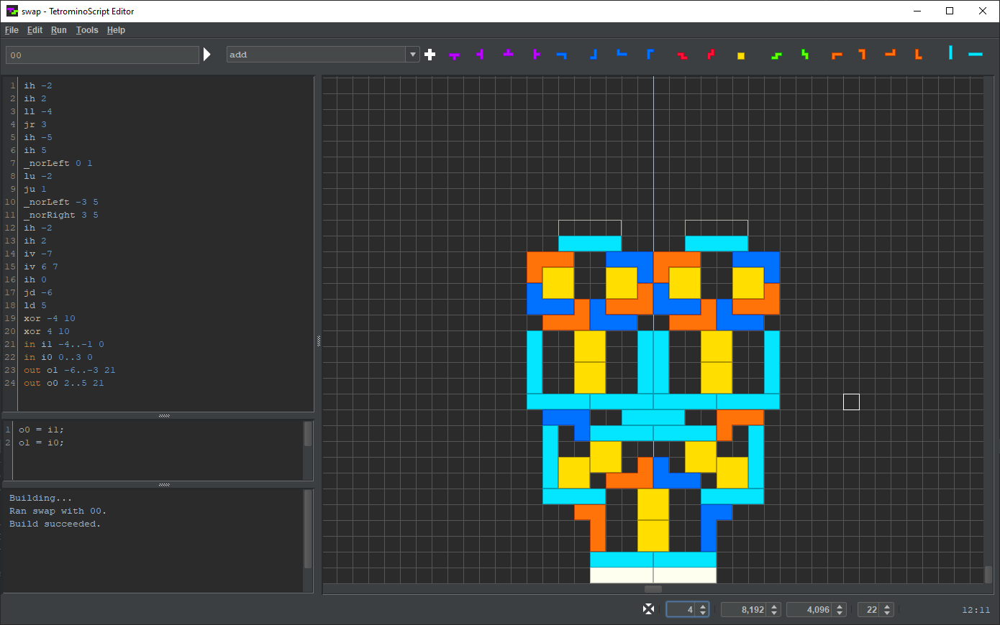
The toolbar provides test and insert controls:
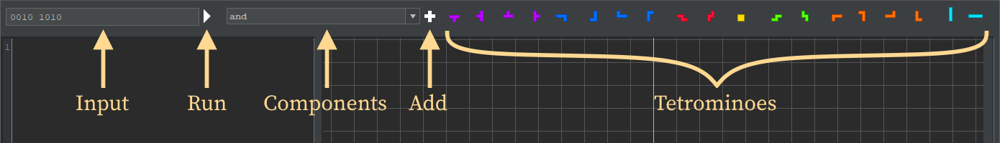
The status bar provides grid controls:
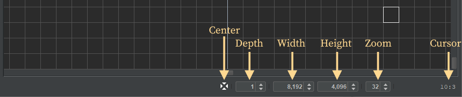
To demonstrate the features of TSE, the following steps explain how to construct a NAND gate.
Select or press Ctrl+N:
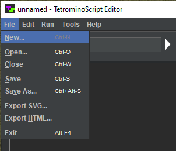
In the New file chooser, navigate to code/ts/examples, enter nandExample.t, and hit :
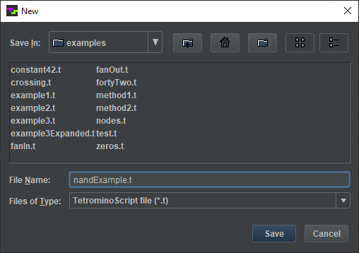
The window regions reset and the named component appears in the title bar:
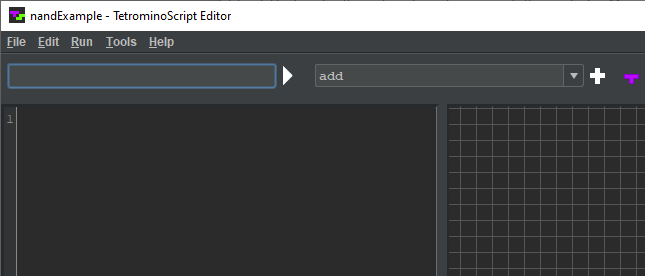
Turn the scroll wheel to adjust the grid cell size to 32:
Type “in a” into the TS program region:
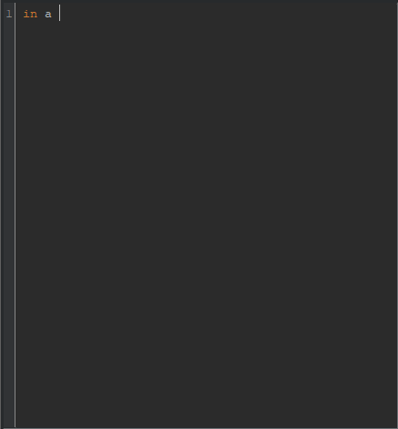
Click on grid cell −2:0:
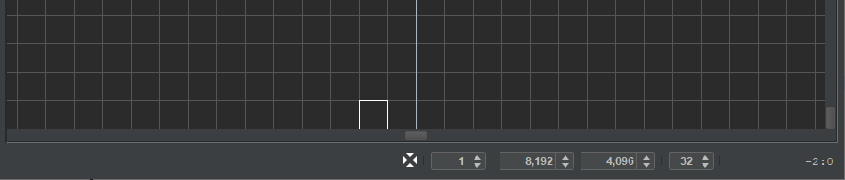
That transfers the cell coordinates to the TS program:
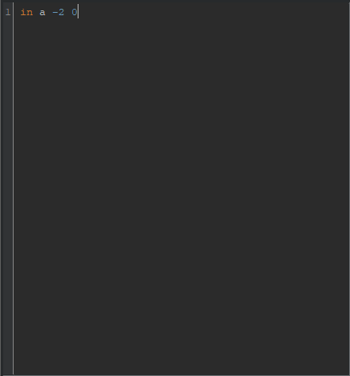
Press Enter. Type “in b” and click on cell 1:0:

Click on the input field and type “01”:
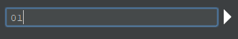
Press the Run button.
Input nodes a and b appear in the playfield with the specified values:
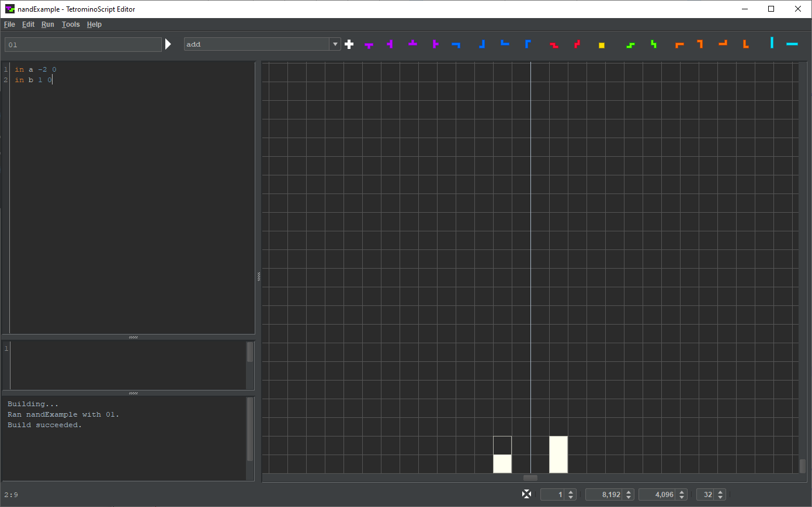
In the TS program region, make sure the cursor is positioned at the end of line 2 or on the start of line 3. Then click on the component combo box and type “notLeft”:
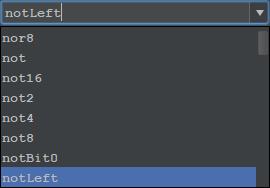
Press the Add button and move the mouse cursor into the playfield:

...
java -cp target/tetromino-computer.jar tetrominocomputer.ts.LutsGenerator -t [ TS programs dir ] -l [ lookup tables dir ]
java -cp target/tetromino-computer.jar tetrominocomputer.ts.LutsGenerator -t code/ts -l code/luts
The Assembler translates a program written in the general-purpose computer’s assembly language into a machine code binary. To run it from the command-line, enter the following.
java -cp target/tetromino-computer.jar tetrominocomputer.asm.Assembler [ asm source filename ] -o [ binary output filename ]
The arguments are optional. They default to:
java -cp target/tetromino-computer.jar tetrominocomputer.asm.Assembler code/asm/example.asm -o code/bin/example.bin
The Cycle Programs Generator produces the general-purpose computer's left and right cycle MC programs based on the size of the machine code binary. To run it from the command-line, enter the following.
java -cp target/tetromino-computer.jar tetrominocomputer.mc.CycleProgramsGenerator -b [ binary filename ] -l [ cycle left filename] -r [ cycle right filename ]
The arguments are optional. They default to:
java -cp target/tetromino-computer.jar tetrominocomputer.mc.CycleProgramsGenerator -b code/bin/example.bin -l code/mc/CYCLE_LEFT.mc -r code/mc/CYCLE_RIGHT.mc
...